<!DOCTYPE html>

<html lang="en" data-content_root="../">
  <head>
    <meta charset="utf-8" />
    <meta name="viewport" content="width=device-width, initial-scale=1.0" /><meta name="viewport" content="width=device-width, initial-scale=1" />

    <title>Bayesian Magnetic Inversion: TMI Inversion Workflow &#8212; Mineye-Terranigma 0.1.0 documentation</title>
    <link rel="stylesheet" type="text/css" href="../_static/pygments.css?v=03e43079" />
    <link rel="stylesheet" type="text/css" href="../_static/basic.css?v=b08954a9" />
    <link rel="stylesheet" type="text/css" href="../_static/alabaster.css?v=0ca6144b" />
    <link rel="stylesheet" type="text/css" href="../_static/sg_gallery.css?v=fd6457a4" />
    <link rel="stylesheet" type="text/css" href="../_static/sg_gallery-binder.css?v=f4aeca0c" />
    <link rel="stylesheet" type="text/css" href="../_static/sg_gallery-dataframe.css?v=2082cf3c" />
    <link rel="stylesheet" type="text/css" href="../_static/sg_gallery-rendered-html.css?v=1277b6f3" />
    <script src="../_static/documentation_options.js?v=01f34227"></script>
    <script src="../_static/doctools.js?v=fd6eb6e6"></script>
    <script src="../_static/sphinx_highlight.js?v=6ffebe34"></script>
    <script src="../_static/sg-tags.js?v=d80f6fa4"></script>
    <link rel="icon" href="../_static/favicon.ico"/>
    <link rel="index" title="Index" href="../genindex.html" />
    <link rel="search" title="Search" href="../search.html" />
   
  <link rel="stylesheet" href="../_static/custom.css" type="text/css" />
  

  
  

  </head><body>
  

    <div class="document">
      <div class="documentwrapper">
        <div class="bodywrapper">
          

          <div class="body" role="main">
            
  <div class="sphx-glr-download-link-note admonition note">
<p class="admonition-title">Note</p>
<p><a class="reference internal" href="#sphx-glr-download-examples-probabilistic-05-magnetics-inversion-py"><span class="std std-ref">Go to the end</span></a>
to download the full example code.</p>
</div>
<section class="sphx-glr-example-title" id="bayesian-magnetic-inversion-tmi-inversion-workflow">
<span id="sphx-glr-examples-probabilistic-05-magnetics-inversion-py"></span><h1>Bayesian Magnetic Inversion: TMI Inversion Workflow<a class="headerlink" href="#bayesian-magnetic-inversion-tmi-inversion-workflow" title="Link to this heading">¶</a></h1>
<p>This tutorial demonstrates Bayesian inversion of Total Magnetic Intensity (TMI)
data using the GemPy-Probability framework. This example parallels
<span class="xref std std-ref">sphx_glr_02_probabilistic_modeling_04_gravity_inversion.py</span> but applies
the methodology to magnetic data.</p>
<p><strong>What’s Different from Gravity?</strong></p>
<p>While the Bayesian framework remains the same (see the gravity tutorial for
theoretical details), magnetic inversions differ in:</p>
<ol class="arabic simple">
<li><p><strong>Forward physics</strong>: We model magnetic susceptibility contrasts instead of
density contrasts</p></li>
<li><p><strong>Earth’s field dependence</strong>: Magnetic responses depend on inclination,
declination, and field intensity at the site</p></li>
<li><p><strong>Induced magnetization</strong>: We assume rocks are magnetized by Earth’s current
magnetic field (no remanence)</p></li>
</ol>
<p><strong>Key Parameters</strong></p>
<p>Instead of density (g/cm�), we invert for:</p>
<ul class="simple">
<li><p><strong>Susceptibility</strong> (SI units): Dimensionless quantity ranging from ~0.001
(sediments) to ~0.1 (mafic rocks)</p></li>
<li><p><strong>Dips</strong>: Layer orientations (same as gravity example)</p></li>
</ul>
<p><strong>Data: Total Magnetic Intensity (TMI)</strong></p>
<p>TMI measures the magnitude of the magnetic field vector. Units are nanoTesla (nT).
Typical anomalies range from tens to thousands of nT depending on source depth
and susceptibility contrast.</p>
<p>For comprehensive theory on Bayesian inference, MCMC, and hierarchical modeling,
please refer to <span class="xref std std-ref">sphx_glr_02_probabilistic_modeling_04_gravity_inversion.py</span>.</p>
<div class="highlight-Python notranslate"><div class="highlight"><pre><span></span><span class="kn">import</span><span class="w"> </span><span class="nn">os</span>
<span class="kn">import</span><span class="w"> </span><span class="nn">sys</span>
</pre></div>
</div>
<section id="import-libraries">
<h2>Import Libraries<a class="headerlink" href="#import-libraries" title="Link to this heading">¶</a></h2>
<div class="highlight-Python notranslate"><div class="highlight"><pre><span></span><span class="kn">import</span><span class="w"> </span><span class="nn">dotenv</span>

<span class="n">dotenv</span><span class="o">.</span><span class="n">load_dotenv</span><span class="p">()</span>

<span class="kn">from</span><span class="w"> </span><span class="nn">gempy_probability.modules.plot.plot_posterior</span><span class="w"> </span><span class="kn">import</span> <span class="n">default_red</span><span class="p">,</span> <span class="n">default_blue</span>
<span class="kn">from</span><span class="w"> </span><span class="nn">mineye.GeoModel.model_one.visualization</span><span class="w"> </span><span class="kn">import</span> <span class="n">gempy_viz</span><span class="p">,</span> <span class="n">plot_many_observed_vs_forward</span><span class="p">,</span> <span class="n">generate_gravity_uncertainty_plots</span>

<span class="kn">from</span><span class="w"> </span><span class="nn">mineye.GeoModel.plotting.probabilistic_analysis</span><span class="w"> </span><span class="kn">import</span> <span class="n">plot_geophysics_comparison</span>

<span class="kn">import</span><span class="w"> </span><span class="nn">numpy</span><span class="w"> </span><span class="k">as</span><span class="w"> </span><span class="nn">np</span>
<span class="kn">import</span><span class="w"> </span><span class="nn">matplotlib.pyplot</span><span class="w"> </span><span class="k">as</span><span class="w"> </span><span class="nn">plt</span>
<span class="kn">import</span><span class="w"> </span><span class="nn">multiprocessing</span><span class="w"> </span><span class="k">as</span><span class="w"> </span><span class="nn">mp</span>

<span class="kn">import</span><span class="w"> </span><span class="nn">gempy</span><span class="w"> </span><span class="k">as</span><span class="w"> </span><span class="nn">gp</span>
<span class="kn">import</span><span class="w"> </span><span class="nn">gempy_probability</span><span class="w"> </span><span class="k">as</span><span class="w"> </span><span class="nn">gpp</span>
<span class="kn">import</span><span class="w"> </span><span class="nn">gempy_viewer</span><span class="w"> </span><span class="k">as</span><span class="w"> </span><span class="nn">gpv</span>

<span class="kn">import</span><span class="w"> </span><span class="nn">torch</span>
<span class="kn">import</span><span class="w"> </span><span class="nn">pyro</span>
<span class="kn">import</span><span class="w"> </span><span class="nn">pyro.distributions</span><span class="w"> </span><span class="k">as</span><span class="w"> </span><span class="nn">dist</span>

<span class="kn">import</span><span class="w"> </span><span class="nn">arviz</span><span class="w"> </span><span class="k">as</span><span class="w"> </span><span class="nn">az</span>
<span class="kn">from</span><span class="w"> </span><span class="nn">gempy_probability.core.samplers_data</span><span class="w"> </span><span class="kn">import</span> <span class="n">NUTSConfig</span>

<span class="c1"># Set random seeds for reproducibility</span>
<span class="n">seed</span> <span class="o">=</span> <span class="mi">4003</span>
<span class="n">pyro</span><span class="o">.</span><span class="n">set_rng_seed</span><span class="p">(</span><span class="n">seed</span><span class="p">)</span>
<span class="n">torch</span><span class="o">.</span><span class="n">manual_seed</span><span class="p">(</span><span class="n">seed</span><span class="p">)</span>
<span class="n">np</span><span class="o">.</span><span class="n">random</span><span class="o">.</span><span class="n">seed</span><span class="p">(</span><span class="mi">1234</span><span class="p">)</span>
</pre></div>
</div>
<p>Import helper functions</p>
<div class="highlight-Python notranslate"><div class="highlight"><pre><span></span><span class="kn">from</span><span class="w"> </span><span class="nn">mineye.config</span><span class="w"> </span><span class="kn">import</span> <span class="n">paths</span>
<span class="kn">from</span><span class="w"> </span><span class="nn">mineye.GeoModel.geophysics</span><span class="w"> </span><span class="kn">import</span> <span class="n">align_forward_to_observed</span>
<span class="kn">from</span><span class="w"> </span><span class="nn">mineye.GeoModel.model_one.model_setup</span><span class="w"> </span><span class="kn">import</span> <span class="n">setup_geomodel</span>
<span class="kn">from</span><span class="w"> </span><span class="nn">mineye.GeoModel.model_one.probabilistic_model</span><span class="w"> </span><span class="kn">import</span> <span class="n">normalize</span><span class="p">,</span> <span class="n">set_magnetic_priors</span>
<span class="kn">from</span><span class="w"> </span><span class="nn">mineye.GeoModel.model_one.probabilistic_model_likelihoods</span><span class="w"> </span><span class="kn">import</span> <span class="n">generate_multimagnetic_likelihood_hierarchical_per_station</span>
<span class="kn">from</span><span class="w"> </span><span class="nn">mineye.GeoModel.model_one.visualization</span><span class="w"> </span><span class="kn">import</span> <span class="n">probability_fields_for</span>
<span class="kn">import</span><span class="w"> </span><span class="nn">geopandas</span><span class="w"> </span><span class="k">as</span><span class="w"> </span><span class="nn">gpd</span>
</pre></div>
</div>
</section>
<section id="define-model-extent-and-resolution">
<h2>Define Model Extent and Resolution<a class="headerlink" href="#define-model-extent-and-resolution" title="Link to this heading">¶</a></h2>
<div class="highlight-Python notranslate"><div class="highlight"><pre><span></span><span class="n">min_x</span> <span class="o">=</span> <span class="o">-</span><span class="mi">707521</span>
<span class="n">max_x</span> <span class="o">=</span> <span class="o">-</span><span class="mi">675558</span>
<span class="n">min_y</span> <span class="o">=</span> <span class="mi">4526832</span>
<span class="n">max_y</span> <span class="o">=</span> <span class="mi">4551949</span>
<span class="n">max_z</span> <span class="o">=</span> <span class="mi">505</span>
<span class="n">model_depth</span> <span class="o">=</span> <span class="o">-</span><span class="mi">500</span>
<span class="n">extent</span> <span class="o">=</span> <span class="p">[</span><span class="n">min_x</span><span class="p">,</span> <span class="n">max_x</span><span class="p">,</span> <span class="n">min_y</span><span class="p">,</span> <span class="n">max_y</span><span class="p">,</span> <span class="n">model_depth</span><span class="p">,</span> <span class="n">max_z</span><span class="p">]</span>

<span class="c1"># Model resolution: use octree with refinement level 5</span>
<span class="n">resolution</span> <span class="o">=</span> <span class="kc">None</span>
<span class="n">refinement</span> <span class="o">=</span> <span class="mi">5</span>
</pre></div>
</div>
</section>
<section id="get-data-paths">
<h2>Get Data Paths<a class="headerlink" href="#get-data-paths" title="Link to this heading">¶</a></h2>
<div class="highlight-Python notranslate"><div class="highlight"><pre><span></span><span class="n">mod_or_path</span> <span class="o">=</span> <span class="n">paths</span><span class="o">.</span><span class="n">get_orientations_path</span><span class="p">()</span>
<span class="n">mod_pts_path</span> <span class="o">=</span> <span class="n">paths</span><span class="o">.</span><span class="n">get_points_path</span><span class="p">()</span>
<span class="n">geophysical_dir</span> <span class="o">=</span> <span class="n">paths</span><span class="o">.</span><span class="n">get_geophysical_dir</span><span class="p">()</span>

<span class="nb">print</span><span class="p">(</span><span class="sa">f</span><span class="s2">&quot;Orientations: </span><span class="si">{</span><span class="n">mod_or_path</span><span class="si">}</span><span class="s2">&quot;</span><span class="p">)</span>
<span class="nb">print</span><span class="p">(</span><span class="sa">f</span><span class="s2">&quot;Points: </span><span class="si">{</span><span class="n">mod_pts_path</span><span class="si">}</span><span class="s2">&quot;</span><span class="p">)</span>
<span class="nb">print</span><span class="p">(</span><span class="sa">f</span><span class="s2">&quot;Geophysical data: </span><span class="si">{</span><span class="n">geophysical_dir</span><span class="si">}</span><span class="s2">&quot;</span><span class="p">)</span>
</pre></div>
</div>
<div class="sphx-glr-script-out highlight-none notranslate"><div class="highlight"><pre><span></span>Orientations: /home/leguark/PycharmProjects/Mineye-Terranigma/examples/Data/Model_Input_Data/Simple-Models/orientations_mod.csv
Points: /home/leguark/PycharmProjects/Mineye-Terranigma/examples/Data/Model_Input_Data/Simple-Models/points_mod.csv
Geophysical data: /home/leguark/PycharmProjects/Mineye-Terranigma/examples/Data/General_Input_Data/Geophysical_Cleaned_Data
</pre></div>
</div>
</section>
<section id="create-initial-gempy-model">
<h2>Create Initial GemPy Model<a class="headerlink" href="#create-initial-gempy-model" title="Link to this heading">¶</a></h2>
<div class="highlight-Python notranslate"><div class="highlight"><pre><span></span><span class="n">simple_geo_model</span> <span class="o">=</span> <span class="n">gp</span><span class="o">.</span><span class="n">create_geomodel</span><span class="p">(</span>
    <span class="n">project_name</span><span class="o">=</span><span class="s1">&#39;magnetics_inversion&#39;</span><span class="p">,</span>
    <span class="n">extent</span><span class="o">=</span><span class="n">extent</span><span class="p">,</span>
    <span class="n">refinement</span><span class="o">=</span><span class="n">refinement</span><span class="p">,</span>
    <span class="n">resolution</span><span class="o">=</span><span class="n">resolution</span><span class="p">,</span>
    <span class="n">importer_helper</span><span class="o">=</span><span class="n">gp</span><span class="o">.</span><span class="n">data</span><span class="o">.</span><span class="n">ImporterHelper</span><span class="p">(</span>
        <span class="n">path_to_orientations</span><span class="o">=</span><span class="n">mod_or_path</span><span class="p">,</span>
        <span class="n">path_to_surface_points</span><span class="o">=</span><span class="n">mod_pts_path</span><span class="p">,</span>
    <span class="p">)</span>
<span class="p">)</span>

<span class="n">gp</span><span class="o">.</span><span class="n">map_stack_to_surfaces</span><span class="p">(</span>
    <span class="n">gempy_model</span><span class="o">=</span><span class="n">simple_geo_model</span><span class="p">,</span>
    <span class="n">mapping_object</span><span class="o">=</span><span class="p">{</span>
            <span class="s2">&quot;Tournaisian_Plutonites&quot;</span><span class="p">:</span> <span class="p">[</span><span class="s2">&quot;Tournaisian Plutonites&quot;</span><span class="p">],</span>
    <span class="p">}</span>
<span class="p">)</span>
</pre></div>
</div>
<div class="output_subarea output_html rendered_html output_result">

        <table>
          <tr><td>Structural Groups:</td><td>
    <table style="border-left:1.2px solid black;>
      <tr><th colspan="2"><b>StructuralGroup:</b></th></tr>
      <tr><td>Name:</td><td>Tournaisian_Plutonites</td></tr>
      <tr><td>Structural Relation:</td><td>StackRelationType.ERODE</td></tr>
      <tr><td>Elements:</td><td>
    <table width="50%" style="border-left:15px solid #015482;">
      <tr><th colspan="2"><b>StructuralElement:</b></th></tr>
      <tr><td>Name:</td><td>Tournaisian Plutonites</td></tr>
    </table>
        </td></tr>
    </table>
        </td></tr>
          <tr><td>Fault Relations:</td><td><table style="border-collapse: collapse; table-layout: fixed;"><th></th><th style="transform: rotate(-35deg); height:150px; vertical-align: bottom; text-align: center;">Tournaisia...</th><tr><th>Tournaisian_Plutonites</th><td style="background-color: #FFB6C1; width: 20px; height: 20px; border: 1px solid black;"></td></tr></table></td></tr>
          <tr><td></td><td>
        <table>
          <tr>
            <td><div style="display: inline-block; background-color: #527682; width: 20px; height: 20px; border: 1px solid black;"></div> True</td>
            <td><div style="display: inline-block; background-color: #FFB6C1; width: 20px; height: 20px; border: 1px solid black;"></div> False</td>
          </tr>
        </table>
        </td></tr>
        </table>

</div>
<br />
<br /></section>
<section id="step-1-load-magnetic-observations">
<h2>Step 1: Load Magnetic Observations<a class="headerlink" href="#step-1-load-magnetic-observations" title="Link to this heading">¶</a></h2>
<p><strong>Total Magnetic Intensity (TMI) Data</strong></p>
<p>TMI measures variations in the magnitude of Earth’s magnetic field caused by
subsurface magnetic susceptibility contrasts. Magnetic rocks (e.g., plutons
with magnetite) create positive anomalies; non-magnetic rocks (e.g.,
sediments) create negative anomalies or lows.</p>
<p><strong>Units</strong>: nanoTesla (nT), where 1 nT = 10⁻⁹ Tesla. Earth’s field is ~47,000 nT
at this location; anomalies from geology are typically 10-1000 nT.</p>
<div class="highlight-Python notranslate"><div class="highlight"><pre><span></span><span class="k">def</span><span class="w"> </span><span class="nf">read_magnetics</span><span class="p">(</span><span class="n">geophysical_dir</span><span class="p">):</span>
<span class="w">    </span><span class="sd">&quot;&quot;&quot;Read magnetic data from geophysical directory.&quot;&quot;&quot;</span>
    <span class="n">magnetic_data</span> <span class="o">=</span> <span class="n">gpd</span><span class="o">.</span><span class="n">read_file</span><span class="p">(</span><span class="n">os</span><span class="o">.</span><span class="n">path</span><span class="o">.</span><span class="n">join</span><span class="p">(</span><span class="n">geophysical_dir</span><span class="p">,</span> <span class="s1">&#39;cleaned_magnetic_data.geojson&#39;</span><span class="p">))</span>
    <span class="c1"># Sample 20 points for this example</span>
    <span class="n">sampled_magnetic</span> <span class="o">=</span> <span class="n">magnetic_data</span><span class="o">.</span><span class="n">sample</span><span class="p">(</span><span class="n">n</span><span class="o">=</span><span class="mi">20</span><span class="p">,</span> <span class="n">random_state</span><span class="o">=</span><span class="mi">42</span><span class="p">)</span>
    <span class="n">observed_magnetics</span> <span class="o">=</span> <span class="n">sampled_magnetic</span><span class="p">[</span><span class="s1">&#39;MAG&#39;</span><span class="p">]</span><span class="o">.</span><span class="n">values</span>  <span class="c1"># in nT</span>
    <span class="k">return</span> <span class="n">sampled_magnetic</span><span class="p">,</span> <span class="n">observed_magnetics</span>


<span class="n">magnetic_data</span><span class="p">,</span> <span class="n">observed_magnetics_nt</span> <span class="o">=</span> <span class="n">read_magnetics</span><span class="p">(</span><span class="n">geophysical_dir</span><span class="p">)</span>
<span class="nb">print</span><span class="p">(</span><span class="sa">f</span><span class="s2">&quot;</span><span class="se">\n</span><span class="s2">Magnetic observations:&quot;</span><span class="p">)</span>
<span class="nb">print</span><span class="p">(</span><span class="sa">f</span><span class="s2">&quot;  Number of measurements: </span><span class="si">{</span><span class="nb">len</span><span class="p">(</span><span class="n">observed_magnetics_nt</span><span class="p">)</span><span class="si">}</span><span class="s2">&quot;</span><span class="p">)</span>
<span class="nb">print</span><span class="p">(</span><span class="sa">f</span><span class="s2">&quot;  Range: </span><span class="si">{</span><span class="n">observed_magnetics_nt</span><span class="o">.</span><span class="n">min</span><span class="p">()</span><span class="si">:</span><span class="s2">.1f</span><span class="si">}</span><span class="s2"> to </span><span class="si">{</span><span class="n">observed_magnetics_nt</span><span class="o">.</span><span class="n">max</span><span class="p">()</span><span class="si">:</span><span class="s2">.1f</span><span class="si">}</span><span class="s2"> nT&quot;</span><span class="p">)</span>
<span class="nb">print</span><span class="p">(</span><span class="sa">f</span><span class="s2">&quot;  Mean: </span><span class="si">{</span><span class="n">observed_magnetics_nt</span><span class="o">.</span><span class="n">mean</span><span class="p">()</span><span class="si">:</span><span class="s2">.1f</span><span class="si">}</span><span class="s2"> nT&quot;</span><span class="p">)</span>
</pre></div>
</div>
<div class="sphx-glr-script-out highlight-none notranslate"><div class="highlight"><pre><span></span>Magnetic observations:
  Number of measurements: 20
  Range: 43216.0 to 43350.1 nT
  Mean: 43285.5 nT
</pre></div>
</div>
</section>
<section id="step-2-setup-geomodel-with-magnetic-configuration">
<h2>Step 2: Setup Geomodel with Magnetic Configuration<a class="headerlink" href="#step-2-setup-geomodel-with-magnetic-configuration" title="Link to this heading">¶</a></h2>
<p><strong>Magnetic Forward Modeling</strong></p>
<p>Magnetic modeling requires:</p>
<ol class="arabic simple">
<li><p><strong>Centered grid</strong>: Measurement locations in 3D space</p></li>
<li><p><strong>Magnetic gradient tensor</strong>: Pre-computed kernel for TMI calculation</p></li>
<li><p><strong>IGRF parameters</strong>: International Geomagnetic Reference Field for location
(inclination, declination, intensity)</p></li>
<li><p><strong>Susceptibilities</strong>: Initial values for each rock unit</p></li>
</ol>
<div class="highlight-Python notranslate"><div class="highlight"><pre><span></span><span class="k">def</span><span class="w"> </span><span class="nf">setup_magnetic_geomodel</span><span class="p">(</span><span class="n">magnetic_data</span><span class="p">,</span> <span class="n">simple_geo_model</span><span class="p">):</span>
<span class="w">    </span><span class="sd">&quot;&quot;&quot;Setup geomodel with magnetic measurement locations.&quot;&quot;&quot;</span>
    <span class="n">xy_ravel</span> <span class="o">=</span> <span class="n">np</span><span class="o">.</span><span class="n">column_stack</span><span class="p">([</span>
            <span class="n">np</span><span class="o">.</span><span class="n">array</span><span class="p">(</span><span class="n">magnetic_data</span><span class="o">.</span><span class="n">geometry</span><span class="o">.</span><span class="n">x</span><span class="o">.</span><span class="n">values</span><span class="p">),</span>
            <span class="n">np</span><span class="o">.</span><span class="n">array</span><span class="p">(</span><span class="n">magnetic_data</span><span class="o">.</span><span class="n">geometry</span><span class="o">.</span><span class="n">y</span><span class="o">.</span><span class="n">values</span><span class="p">),</span>
            <span class="n">np</span><span class="o">.</span><span class="n">full</span><span class="p">(</span><span class="nb">len</span><span class="p">(</span><span class="n">magnetic_data</span><span class="p">),</span> <span class="mi">500</span><span class="p">)</span>  <span class="c1"># Surface elevation</span>
    <span class="p">])</span>

    <span class="c1"># Setup centered grid for magnetics</span>
    <span class="n">gp</span><span class="o">.</span><span class="n">set_centered_grid</span><span class="p">(</span>
        <span class="n">grid</span><span class="o">=</span><span class="n">simple_geo_model</span><span class="o">.</span><span class="n">grid</span><span class="p">,</span>
        <span class="n">centers</span><span class="o">=</span><span class="n">xy_ravel</span><span class="p">,</span>
        <span class="n">resolution</span><span class="o">=</span><span class="n">np</span><span class="o">.</span><span class="n">array</span><span class="p">([</span><span class="mi">10</span><span class="p">,</span> <span class="mi">10</span><span class="p">,</span> <span class="mi">15</span><span class="p">]),</span>
        <span class="n">radius</span><span class="o">=</span><span class="n">np</span><span class="o">.</span><span class="n">array</span><span class="p">([</span><span class="mi">2000</span><span class="p">,</span> <span class="mi">5000</span><span class="p">,</span> <span class="mi">2000</span><span class="p">])</span>
    <span class="p">)</span>

    <span class="c1"># Calculate magnetic gradient tensor</span>
    <span class="kn">from</span><span class="w"> </span><span class="nn">gempy_engine.modules.geophysics.magnetic_gradient</span><span class="w"> </span><span class="kn">import</span> <span class="n">calculate_magnetic_gradient_tensor</span>
    <span class="kn">from</span><span class="w"> </span><span class="nn">gempy_engine.core.data.geophysics_input</span><span class="w"> </span><span class="kn">import</span> <span class="n">MagneticsInput</span>

    <span class="n">gradient_tensor_dict</span> <span class="o">=</span> <span class="n">calculate_magnetic_gradient_tensor</span><span class="p">(</span>
        <span class="n">centered_grid</span><span class="o">=</span><span class="n">simple_geo_model</span><span class="o">.</span><span class="n">grid</span><span class="o">.</span><span class="n">centered_grid</span><span class="p">,</span>
        <span class="n">igrf_params</span><span class="o">=</span><span class="p">{</span>
                <span class="s2">&quot;inclination&quot;</span><span class="p">:</span> <span class="mf">60.79</span><span class="p">,</span>  <span class="c1"># Huelva, Spain (2025)</span>
                <span class="s2">&quot;declination&quot;</span><span class="p">:</span> <span class="mf">1.26</span><span class="p">,</span>
                <span class="s2">&quot;intensity&quot;</span>  <span class="p">:</span> <span class="mf">47258.4</span>  <span class="c1"># Earth&#39;s field strength in nT</span>
        <span class="p">},</span>
        <span class="n">compute_tmi</span><span class="o">=</span><span class="kc">True</span><span class="p">,</span>
        <span class="n">units_nT</span><span class="o">=</span><span class="kc">True</span><span class="p">,</span>
    <span class="p">)</span>

    <span class="c1"># Configure geophysics input</span>
    <span class="n">simple_geo_model</span><span class="o">.</span><span class="n">geophysics_input</span> <span class="o">=</span> <span class="n">gp</span><span class="o">.</span><span class="n">data</span><span class="o">.</span><span class="n">GeophysicsInput</span><span class="p">(</span>
        <span class="n">magnetics_input</span><span class="o">=</span><span class="n">MagneticsInput</span><span class="p">(</span>
            <span class="n">mag_kernel</span><span class="o">=</span><span class="n">gradient_tensor_dict</span><span class="p">[</span><span class="s1">&#39;tmi_kernel&#39;</span><span class="p">],</span>
            <span class="n">susceptibilities</span><span class="o">=</span><span class="n">np</span><span class="o">.</span><span class="n">array</span><span class="p">([</span><span class="mf">0.05</span><span class="p">,</span> <span class="mf">0.001</span><span class="p">]),</span>  <span class="c1"># Initial: plutonites, host</span>
            <span class="n">igrf_params</span><span class="o">=</span><span class="p">{</span>
                    <span class="s2">&quot;inclination&quot;</span><span class="p">:</span> <span class="n">gradient_tensor_dict</span><span class="p">[</span><span class="s1">&#39;inclination&#39;</span><span class="p">],</span>
                    <span class="s2">&quot;declination&quot;</span><span class="p">:</span> <span class="n">gradient_tensor_dict</span><span class="p">[</span><span class="s1">&#39;declination&#39;</span><span class="p">],</span>
                    <span class="s2">&quot;intensity&quot;</span>  <span class="p">:</span> <span class="n">gradient_tensor_dict</span><span class="p">[</span><span class="s1">&#39;intensity&#39;</span><span class="p">]</span>
            <span class="p">}</span>
        <span class="p">)</span>
    <span class="p">)</span>

    <span class="n">simple_geo_model</span><span class="o">.</span><span class="n">interpolation_options</span><span class="o">.</span><span class="n">mesh_extraction</span> <span class="o">=</span> <span class="kc">False</span>

    <span class="n">gp</span><span class="o">.</span><span class="n">set_active_grid</span><span class="p">(</span>
        <span class="n">grid</span><span class="o">=</span><span class="n">simple_geo_model</span><span class="o">.</span><span class="n">grid</span><span class="p">,</span>
        <span class="n">grid_type</span><span class="o">=</span><span class="p">[</span><span class="n">simple_geo_model</span><span class="o">.</span><span class="n">grid</span><span class="o">.</span><span class="n">GridTypes</span><span class="o">.</span><span class="n">CENTERED</span><span class="p">],</span>
        <span class="n">reset</span><span class="o">=</span><span class="kc">True</span>
    <span class="p">)</span>

    <span class="k">return</span> <span class="n">simple_geo_model</span><span class="p">,</span> <span class="n">xy_ravel</span>
</pre></div>
</div>
</section>
<section id="compute-and-visualize-initial-model">
<h2>Compute and Visualize Initial Model<a class="headerlink" href="#compute-and-visualize-initial-model" title="Link to this heading">¶</a></h2>
<div class="highlight-Python notranslate"><div class="highlight"><pre><span></span><span class="n">gp</span><span class="o">.</span><span class="n">compute_model</span><span class="p">(</span><span class="n">simple_geo_model</span><span class="p">)</span>
<span class="n">gpv</span><span class="o">.</span><span class="n">plot_2d</span><span class="p">(</span><span class="n">simple_geo_model</span><span class="p">)</span>
</pre></div>
</div>
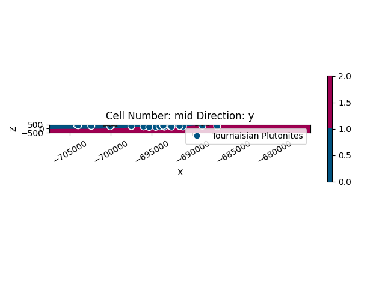<div class="sphx-glr-script-out highlight-none notranslate"><div class="highlight"><pre><span></span>Setting Backend To: AvailableBackends.PYTORCH
Using sequential processing for 1 surfaces

&lt;gempy_viewer.modules.plot_2d.visualization_2d.Plot2D object at 0x7fed00e1e300&gt;
</pre></div>
</div>
<div class="highlight-Python notranslate"><div class="highlight"><pre><span></span><span class="n">gpv</span><span class="o">.</span><span class="n">plot_3d</span><span class="p">(</span>
    <span class="n">model</span><span class="o">=</span><span class="n">simple_geo_model</span><span class="p">,</span>
    <span class="n">ve</span><span class="o">=</span><span class="mi">5</span><span class="p">,</span>
    <span class="n">image</span><span class="o">=</span><span class="kc">False</span><span class="p">,</span>
    <span class="n">kwargs_pyvista_bounds</span><span class="o">=</span><span class="p">{</span>
            <span class="s1">&#39;show_xlabels&#39;</span><span class="p">:</span> <span class="kc">False</span><span class="p">,</span>
            <span class="s1">&#39;show_ylabels&#39;</span><span class="p">:</span> <span class="kc">False</span><span class="p">,</span>
            <span class="s1">&#39;show_zlabels&#39;</span><span class="p">:</span> <span class="kc">False</span><span class="p">,</span>
    <span class="p">}</span>
<span class="p">)</span>
</pre></div>
</div>
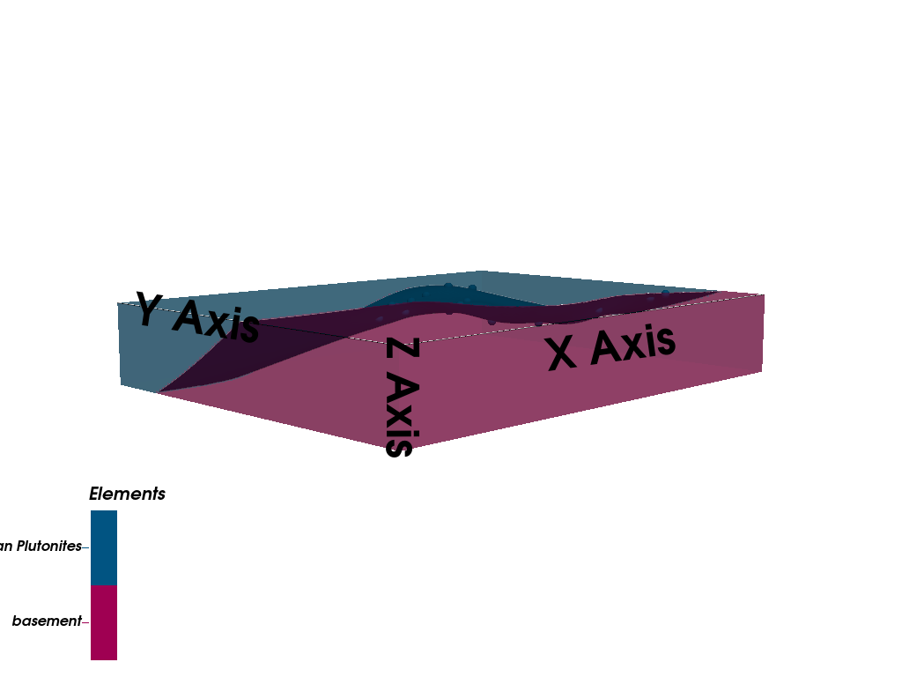<div class="sphx-glr-script-out highlight-none notranslate"><div class="highlight"><pre><span></span>/home/leguark/PycharmProjects/gempy_viewer/gempy_viewer/modules/plot_3d/drawer_surfaces_3d.py:38: PyVistaDeprecationWarning:
../../../gempy_viewer/gempy_viewer/modules/plot_3d/drawer_surfaces_3d.py:38: Argument &#39;color&#39; must be passed as a keyword argument to function &#39;BasePlotter.add_mesh&#39;.
From version 0.50, passing this as a positional argument will result in a TypeError.
  gempy_vista.surface_actors[element.name] = gempy_vista.p.add_mesh(

&lt;gempy_viewer.modules.plot_3d.vista.GemPyToVista object at 0x7fed7c6ada70&gt;
</pre></div>
</div>
<div class="highlight-Python notranslate"><div class="highlight"><pre><span></span><span class="n">geo_model</span><span class="p">,</span> <span class="n">xy_ravel</span> <span class="o">=</span> <span class="n">setup_magnetic_geomodel</span><span class="p">(</span><span class="n">magnetic_data</span><span class="p">,</span> <span class="n">simple_geo_model</span><span class="p">)</span>
<span class="n">geo_model</span><span class="o">.</span><span class="n">interpolation_options</span><span class="o">.</span><span class="n">sigmoid_slope</span> <span class="o">=</span> <span class="mi">100</span>

<span class="nb">print</span><span class="p">(</span><span class="sa">f</span><span class="s2">&quot;</span><span class="se">\n</span><span class="s2"> Geomodel configured with </span><span class="si">{</span><span class="nb">len</span><span class="p">(</span><span class="n">xy_ravel</span><span class="p">)</span><span class="si">}</span><span class="s2"> magnetic measurement locations&quot;</span><span class="p">)</span>
</pre></div>
</div>
<div class="sphx-glr-script-out highlight-none notranslate"><div class="highlight"><pre><span></span>Active grids: GridTypes.OCTREE|CENTERED|NONE
Active grids: GridTypes.CENTERED|NONE

 Geomodel configured with 20 magnetic measurement locations
</pre></div>
</div>
</section>
<section id="step-3-compute-baseline-forward-model">
<h2>Step 3: Compute Baseline Forward Model<a class="headerlink" href="#step-3-compute-baseline-forward-model" title="Link to this heading">¶</a></h2>
<p>Compute forward magnetics with initial susceptibility values to assess
baseline fit before inversion.</p>
<div class="highlight-Python notranslate"><div class="highlight"><pre><span></span><span class="k">def</span><span class="w"> </span><span class="nf">baseline_magnetics</span><span class="p">(</span><span class="n">geo_model</span><span class="p">):</span>
<span class="w">    </span><span class="sd">&quot;&quot;&quot;Compute baseline forward magnetics model.&quot;&quot;&quot;</span>
    <span class="n">sol</span> <span class="o">=</span> <span class="n">gp</span><span class="o">.</span><span class="n">compute_model</span><span class="p">(</span><span class="n">geo_model</span><span class="p">)</span>
    <span class="k">return</span> <span class="n">sol</span><span class="o">.</span><span class="n">magnetics</span><span class="o">.</span><span class="n">detach</span><span class="p">()</span><span class="o">.</span><span class="n">cpu</span><span class="p">()</span><span class="o">.</span><span class="n">numpy</span><span class="p">()</span> <span class="k">if</span> <span class="nb">hasattr</span><span class="p">(</span><span class="n">sol</span><span class="o">.</span><span class="n">magnetics</span><span class="p">,</span> <span class="s1">&#39;detach&#39;</span><span class="p">)</span> <span class="k">else</span> <span class="n">sol</span><span class="o">.</span><span class="n">magnetics</span>


<span class="n">baseline_fw_magnetics_np</span> <span class="o">=</span> <span class="n">baseline_magnetics</span><span class="p">(</span><span class="n">geo_model</span><span class="p">)</span>
<span class="nb">print</span><span class="p">(</span><span class="sa">f</span><span class="s2">&quot;</span><span class="se">\n</span><span class="s2">Baseline forward magnetics:&quot;</span><span class="p">)</span>
<span class="nb">print</span><span class="p">(</span><span class="sa">f</span><span class="s2">&quot;  Range: </span><span class="si">{</span><span class="n">baseline_fw_magnetics_np</span><span class="o">.</span><span class="n">min</span><span class="p">()</span><span class="si">:</span><span class="s2">.1f</span><span class="si">}</span><span class="s2"> to </span><span class="si">{</span><span class="n">baseline_fw_magnetics_np</span><span class="o">.</span><span class="n">max</span><span class="p">()</span><span class="si">:</span><span class="s2">.1f</span><span class="si">}</span><span class="s2"> nT&quot;</span><span class="p">)</span>
<span class="nb">print</span><span class="p">(</span><span class="sa">f</span><span class="s2">&quot;  Mean: </span><span class="si">{</span><span class="n">baseline_fw_magnetics_np</span><span class="o">.</span><span class="n">mean</span><span class="p">()</span><span class="si">:</span><span class="s2">.1f</span><span class="si">}</span><span class="s2"> nT&quot;</span><span class="p">)</span>
</pre></div>
</div>
<div class="sphx-glr-script-out highlight-none notranslate"><div class="highlight"><pre><span></span>Setting Backend To: AvailableBackends.PYTORCH

Baseline forward magnetics:
  Range: -150.2 to 56.3 nT
  Mean: -25.2 nT
</pre></div>
</div>
</section>
<section id="step-4-normalize-forward-model-to-observations">
<h2>Step 4: Normalize Forward Model to Observations<a class="headerlink" href="#step-4-normalize-forward-model-to-observations" title="Link to this heading">¶</a></h2>
<p>Similar to gravity, we align the forward model to observations to handle
regional trends and reference frame differences.</p>
<div class="highlight-Python notranslate"><div class="highlight"><pre><span></span><span class="n">norm_params</span> <span class="o">=</span> <span class="n">normalize</span><span class="p">(</span>
    <span class="n">baseline_fw_gravity_np</span><span class="o">=</span><span class="n">baseline_fw_magnetics_np</span><span class="p">,</span>
    <span class="n">observed_gravity</span><span class="o">=</span><span class="n">observed_magnetics_nt</span><span class="p">,</span>
    <span class="n">method</span><span class="o">=</span><span class="s2">&quot;align_to_reference&quot;</span><span class="p">,</span>
    <span class="n">extrapolation_buffer</span><span class="o">=</span><span class="mf">0.3</span>
<span class="p">)</span>
<span class="nb">print</span><span class="p">(</span><span class="sa">f</span><span class="s2">&quot;</span><span class="se">\n</span><span class="s2">Normalization parameters:&quot;</span><span class="p">)</span>
<span class="nb">print</span><span class="p">(</span><span class="sa">f</span><span class="s2">&quot;  Method: </span><span class="si">{</span><span class="n">norm_params</span><span class="p">[</span><span class="s1">&#39;method&#39;</span><span class="p">]</span><span class="si">}</span><span class="s2">&quot;</span><span class="p">)</span>
</pre></div>
</div>
<div class="sphx-glr-script-out highlight-none notranslate"><div class="highlight"><pre><span></span>Computing align_to_reference alignment parameters...
  Alignment params: {&#39;method&#39;: &#39;align_to_reference&#39;, &#39;reference_mean&#39;: 43285.51, &#39;reference_std&#39;: 32.132411985407714, &#39;baseline_forward_mean&#39;: -25.24697207126045, &#39;baseline_forward_std&#39;: 54.74728579871348}

Normalization parameters:
  Method: align_to_reference
</pre></div>
</div>
<p>Visualize baseline fit</p>
<div class="highlight-Python notranslate"><div class="highlight"><pre><span></span><span class="n">plot_geophysics_comparison</span><span class="p">(</span>
    <span class="n">forward_norm</span><span class="o">=</span><span class="n">align_forward_to_observed</span><span class="p">(</span><span class="n">baseline_fw_magnetics_np</span><span class="p">,</span> <span class="n">norm_params</span><span class="p">),</span>
    <span class="n">normalization_method</span><span class="o">=</span><span class="s2">&quot;align_to_reference&quot;</span><span class="p">,</span>
    <span class="n">observed_ugal</span><span class="o">=</span><span class="n">observed_magnetics_nt</span><span class="p">,</span>
    <span class="n">xy_ravel</span><span class="o">=</span><span class="n">xy_ravel</span>
<span class="p">)</span>
</pre></div>
</div>
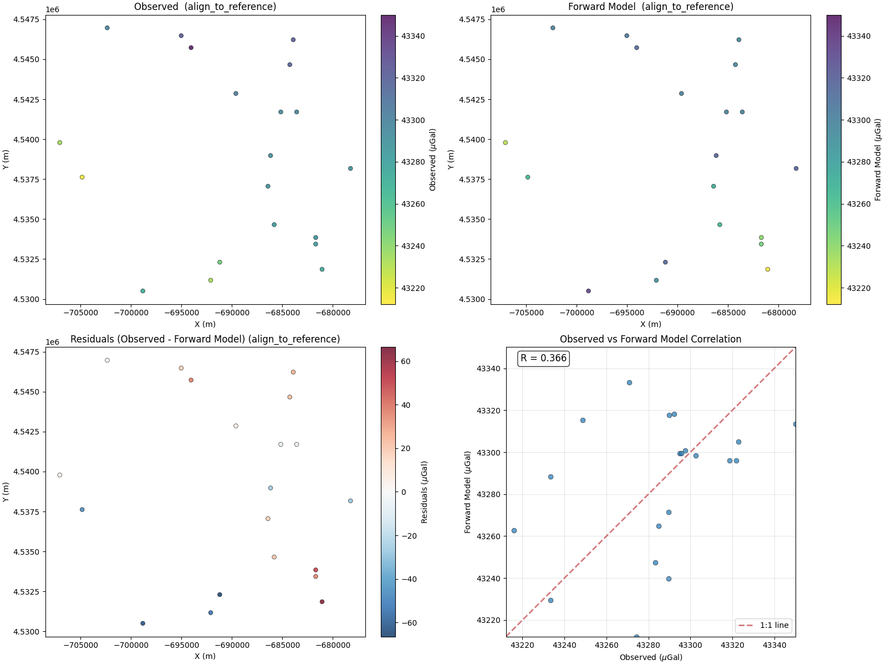</section>
<section id="step-5-define-prior-distributions">
<h2>Step 5: Define Prior Distributions<a class="headerlink" href="#step-5-define-prior-distributions" title="Link to this heading">¶</a></h2>
<p><strong>Priors for Magnetic Inversion</strong></p>
<p>We define priors on:</p>
<ol class="arabic simple">
<li><p><strong>Dips</strong>: Same as gravity example (N(10�, 10�))</p></li>
<li><p><strong>Susceptibilities</strong>:
- Plutonites: 0.05 � 0.01 SI (typical for granitic rocks with magnetite)
- Host rock: 0.001 � 0.01 SI (low susceptibility sediments)</p></li>
</ol>
<div class="highlight-Python notranslate"><div class="highlight"><pre><span></span><span class="n">n_orientations</span> <span class="o">=</span> <span class="n">geo_model</span><span class="o">.</span><span class="n">orientations_copy</span><span class="o">.</span><span class="n">xyz</span><span class="o">.</span><span class="n">shape</span><span class="p">[</span><span class="mi">0</span><span class="p">]</span>
<span class="n">prior_key_dips</span> <span class="o">=</span> <span class="sa">r</span><span class="s1">&#39;dips&#39;</span>
<span class="n">prior_key_susceptibility</span> <span class="o">=</span> <span class="sa">r</span><span class="s1">&#39;susceptibility&#39;</span>

<span class="n">model_priors</span> <span class="o">=</span> <span class="p">{</span>
        <span class="n">prior_key_dips</span>          <span class="p">:</span> <span class="n">dist</span><span class="o">.</span><span class="n">Normal</span><span class="p">(</span>
            <span class="n">loc</span><span class="o">=</span><span class="p">(</span><span class="n">torch</span><span class="o">.</span><span class="n">ones</span><span class="p">(</span><span class="n">n_orientations</span><span class="p">)</span> <span class="o">*</span> <span class="mf">10.0</span><span class="p">),</span>
            <span class="n">scale</span><span class="o">=</span><span class="n">torch</span><span class="o">.</span><span class="n">tensor</span><span class="p">(</span><span class="mf">10.0</span><span class="p">,</span> <span class="n">dtype</span><span class="o">=</span><span class="n">torch</span><span class="o">.</span><span class="n">float64</span><span class="p">),</span>
            <span class="n">validate_args</span><span class="o">=</span><span class="kc">True</span>
        <span class="p">)</span><span class="o">.</span><span class="n">to_event</span><span class="p">(</span><span class="mi">1</span><span class="p">),</span>
        <span class="n">prior_key_susceptibility</span><span class="p">:</span> <span class="n">dist</span><span class="o">.</span><span class="n">Normal</span><span class="p">(</span>
            <span class="n">loc</span><span class="o">=</span><span class="p">(</span><span class="n">torch</span><span class="o">.</span><span class="n">tensor</span><span class="p">([</span>
                    <span class="mf">0.05</span><span class="p">,</span>  <span class="c1"># plutonites</span>
                    <span class="mf">0.001</span>  <span class="c1"># host rock</span>
            <span class="p">])),</span>
            <span class="n">scale</span><span class="o">=</span><span class="n">torch</span><span class="o">.</span><span class="n">tensor</span><span class="p">(</span><span class="mf">0.01</span><span class="p">),</span>
        <span class="p">)</span><span class="o">.</span><span class="n">to_event</span><span class="p">(</span><span class="mi">1</span><span class="p">)</span>
<span class="p">}</span>

<span class="nb">print</span><span class="p">(</span><span class="sa">f</span><span class="s2">&quot;</span><span class="se">\n</span><span class="s2">Prior on susceptibilities:&quot;</span><span class="p">)</span>
<span class="nb">print</span><span class="p">(</span><span class="sa">f</span><span class="s2">&quot;  Plutonites: 0.05 � 0.01 SI&quot;</span><span class="p">)</span>
<span class="nb">print</span><span class="p">(</span><span class="sa">f</span><span class="s2">&quot;  Host rock: 0.001 � 0.01 SI&quot;</span><span class="p">)</span>
</pre></div>
</div>
<div class="sphx-glr-script-out highlight-none notranslate"><div class="highlight"><pre><span></span>Prior on susceptibilities:
  Plutonites: 0.05 � 0.01 SI
  Host rock: 0.001 � 0.01 SI
</pre></div>
</div>
</section>
<section id="step-6-define-deterministic-functions">
<h2>Step 6: Define Deterministic Functions<a class="headerlink" href="#step-6-define-deterministic-functions" title="Link to this heading">¶</a></h2>
<div class="highlight-Python notranslate"><div class="highlight"><pre><span></span><span class="n">post_forward_dets</span> <span class="o">=</span> <span class="p">{</span>
        <span class="s2">&quot;magnetic_response_raw&quot;</span><span class="p">:</span> <span class="k">lambda</span> <span class="n">samples</span><span class="p">,</span> <span class="n">gm</span><span class="p">,</span> <span class="n">sol</span><span class="p">:</span> <span class="n">sol</span><span class="o">.</span><span class="n">magnetics</span><span class="p">,</span>
        <span class="sa">r</span><span class="s1">&#39;$\mu_</span><span class="si">{magnetics}</span><span class="s1">$&#39;</span>    <span class="p">:</span> <span class="k">lambda</span> <span class="n">samples</span><span class="p">,</span> <span class="n">gm</span><span class="p">,</span> <span class="n">sol</span><span class="p">:</span> <span class="n">align_forward_to_observed</span><span class="p">(</span>
            <span class="n">sol</span><span class="o">.</span><span class="n">magnetics</span><span class="p">,</span> <span class="n">norm_params</span>
        <span class="p">),</span>
        <span class="s2">&quot;mean_magnetics&quot;</span>       <span class="p">:</span> <span class="k">lambda</span> <span class="n">samples</span><span class="p">,</span> <span class="n">gm</span><span class="p">,</span> <span class="n">sol</span><span class="p">:</span> <span class="n">torch</span><span class="o">.</span><span class="n">mean</span><span class="p">(</span>
            <span class="n">align_forward_to_observed</span><span class="p">(</span><span class="n">sol</span><span class="o">.</span><span class="n">magnetics</span><span class="p">,</span> <span class="n">norm_params</span><span class="p">)</span>
        <span class="p">),</span>
        <span class="s2">&quot;max_magnetics&quot;</span>        <span class="p">:</span> <span class="k">lambda</span> <span class="n">samples</span><span class="p">,</span> <span class="n">gm</span><span class="p">,</span> <span class="n">sol</span><span class="p">:</span> <span class="n">torch</span><span class="o">.</span><span class="n">max</span><span class="p">(</span>
            <span class="n">align_forward_to_observed</span><span class="p">(</span><span class="n">sol</span><span class="o">.</span><span class="n">magnetics</span><span class="p">,</span> <span class="n">norm_params</span><span class="p">),</span> <span class="mi">0</span>
        <span class="p">),</span>
<span class="p">}</span>
</pre></div>
</div>
</section>
<section id="step-7-define-likelihood-function">
<h2>Step 7: Define Likelihood Function<a class="headerlink" href="#step-7-define-likelihood-function" title="Link to this heading">¶</a></h2>
<p>We use a hierarchical likelihood with per-station noise, analogous to the
gravity example but with typical magnetic noise levels (~50 nT).</p>
<div class="highlight-Python notranslate"><div class="highlight"><pre><span></span><span class="n">likelihood_fn</span> <span class="o">=</span> <span class="n">generate_multimagnetic_likelihood_hierarchical_per_station</span><span class="p">(</span>
    <span class="n">norm_params</span><span class="o">=</span><span class="n">norm_params</span>
<span class="p">)</span>

<span class="nb">print</span><span class="p">(</span><span class="s2">&quot;Likelihood function created (hierarchical per-station)&quot;</span><span class="p">)</span>
<span class="nb">print</span><span class="p">(</span><span class="sa">f</span><span class="s2">&quot;  Global mean noise prior: ~50.0 nT&quot;</span><span class="p">)</span>
</pre></div>
</div>
<div class="sphx-glr-script-out highlight-none notranslate"><div class="highlight"><pre><span></span>Likelihood function created (hierarchical per-station)
  Global mean noise prior: ~50.0 nT
</pre></div>
</div>
</section>
<section id="step-8-set-interpolation-input-function">
<h2>Step 8: Set Interpolation Input Function<a class="headerlink" href="#step-8-set-interpolation-input-function" title="Link to this heading">¶</a></h2>
<p>This function updates GemPy model parameters from Pyro samples.</p>
</section>
<section id="step-9-create-probabilistic-model">
<h2>Step 9: Create Probabilistic Model<a class="headerlink" href="#step-9-create-probabilistic-model" title="Link to this heading">¶</a></h2>
<div class="highlight-Python notranslate"><div class="highlight"><pre><span></span><span class="n">prob_model</span><span class="p">:</span> <span class="n">gpp</span><span class="o">.</span><span class="n">GemPyPyroModel</span> <span class="o">=</span> <span class="n">gpp</span><span class="o">.</span><span class="n">make_gempy_pyro_model</span><span class="p">(</span>
    <span class="n">priors</span><span class="o">=</span><span class="n">model_priors</span><span class="p">,</span>
    <span class="n">set_interp_input_fn</span><span class="o">=</span><span class="n">set_magnetic_priors</span><span class="p">,</span>
    <span class="n">likelihood_fn</span><span class="o">=</span><span class="n">likelihood_fn</span><span class="p">,</span>
    <span class="n">obs_name</span><span class="o">=</span><span class="s2">&quot;Magnetic Measurement&quot;</span>
<span class="p">)</span>

<span class="nb">print</span><span class="p">(</span><span class="s2">&quot;Probabilistic model created&quot;</span><span class="p">)</span>
<span class="nb">print</span><span class="p">(</span><span class="s2">&quot;  Model components:&quot;</span><span class="p">)</span>
<span class="nb">print</span><span class="p">(</span><span class="s2">&quot;    - Priors: dips (orientations), susceptibilities&quot;</span><span class="p">)</span>
<span class="nb">print</span><span class="p">(</span><span class="s2">&quot;    - Forward model: GemPy geological interpolation + TMI&quot;</span><span class="p">)</span>
<span class="nb">print</span><span class="p">(</span><span class="s2">&quot;    - Likelihood: Hierarchical per-station noise&quot;</span><span class="p">)</span>
</pre></div>
</div>
<div class="sphx-glr-script-out highlight-none notranslate"><div class="highlight"><pre><span></span>Setting Backend To: AvailableBackends.PYTORCH
Probabilistic model created
  Model components:
    - Priors: dips (orientations), susceptibilities
    - Forward model: GemPy geological interpolation + TMI
    - Likelihood: Hierarchical per-station noise
</pre></div>
</div>
</section>
<section id="step-11-prior-predictive-checks">
<h2>Step 11: Prior Predictive Checks<a class="headerlink" href="#step-11-prior-predictive-checks" title="Link to this heading">¶</a></h2>
<p><strong>Why Prior Predictive Checks?</strong></p>
<p>Before running inference, we sample from the prior to answer critical questions:</p>
<ol class="arabic simple">
<li><p><strong>Range check</strong>: Do prior predictions cover the observed values?
If not, the prior may be too restrictive or the model inadequate.</p></li>
<li><p><strong>Model adequacy</strong>: Can <em>any</em> parameter combination explain the data?
If prior predictions are far from observations, we may need:</p>
<ul class="simple">
<li><p>More model complexity (additional parameters)</p></li>
<li><p>Different physics (e.g., include magnetics, seismic)</p></li>
<li><p>Revised priors (incorrect geological assumptions)</p></li>
</ul>
</li>
<li><p><strong>Prior sensitivity</strong>: How much do predictions vary under the prior?
High variability indicates the prior is uninformative; low variability
suggests the prior is too restrictive.</p></li>
</ol>
<p><strong>Expected behavior</strong>:</p>
<p>In this test case, we simulate 20 observations per iteration. Some forward models
explain certain stations well but fail at others, suggesting:</p>
<ul class="simple">
<li><p>The model may be oversimplified</p></li>
<li><p>Some stations could be outliers</p></li>
<li><p>Additional data types might not help without increasing model complexity</p></li>
</ul>
<p>Prior predictive sampling generates data <em>as if</em> we hadn’t seen the observations yet.</p>
<div class="highlight-Python notranslate"><div class="highlight"><pre><span></span><span class="nb">print</span><span class="p">(</span><span class="s2">&quot;</span><span class="se">\n</span><span class="s2">Running prior predictive sampling (100 samples)...&quot;</span><span class="p">)</span>
<span class="n">prior_inference_data</span><span class="p">:</span> <span class="n">az</span><span class="o">.</span><span class="n">InferenceData</span> <span class="o">=</span> <span class="n">gpp</span><span class="o">.</span><span class="n">run_predictive</span><span class="p">(</span>
    <span class="n">prob_model</span><span class="o">=</span><span class="n">prob_model</span><span class="p">,</span>
    <span class="n">geo_model</span><span class="o">=</span><span class="n">geo_model</span><span class="p">,</span>
    <span class="n">y_obs_list</span><span class="o">=</span><span class="n">torch</span><span class="o">.</span><span class="n">tensor</span><span class="p">(</span><span class="n">observed_magnetics_nt</span><span class="p">),</span>
    <span class="n">n_samples</span><span class="o">=</span><span class="mi">100</span><span class="p">,</span>
    <span class="n">plot_trace</span><span class="o">=</span><span class="kc">True</span>
<span class="p">)</span>

<span class="nb">print</span><span class="p">(</span><span class="s2">&quot;✓ Prior predictive sampling complete&quot;</span><span class="p">)</span>
</pre></div>
</div>
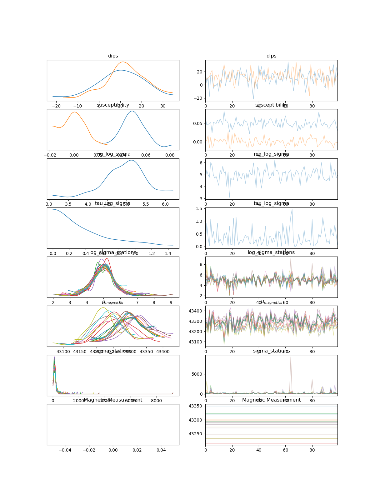<div class="sphx-glr-script-out highlight-none notranslate"><div class="highlight"><pre><span></span>Running prior predictive sampling (100 samples)...
/home/leguark/.venv/2025/lib/python3.13/site-packages/arviz/stats/density_utils.py:488: UserWarning: Your data appears to have a single value or no finite values
  warnings.warn(&quot;Your data appears to have a single value or no finite values&quot;)
✓ Prior predictive sampling complete
</pre></div>
</div>
</section>
<section id="visualize-prior-geological-models">
<h2>Visualize Prior Geological Models<a class="headerlink" href="#visualize-prior-geological-models" title="Link to this heading">¶</a></h2>
<p><strong>Understanding gempy_viz</strong></p>
<p>This function creates a 2D cross-section visualization showing:</p>
<ol class="arabic simple">
<li><p><strong>The geological model</strong>: Interpolated lithological boundaries</p></li>
<li><p><strong>Prior uncertainty via KDE (Kernel Density Estimation)</strong>:</p>
<ul class="simple">
<li><p>Background colored contours show probability density of boundary locations</p></li>
<li><p>Darker/more saturated colors = higher probability</p></li>
<li><p>Shows where the geological boundary is likely to be given our prior beliefs</p></li>
</ul>
</li>
<li><p><strong>Representative realizations</strong>: Individual model samples overlaid as contours</p></li>
</ol>
<p><strong>Why visualize the prior?</strong></p>
<ul class="simple">
<li><p>Verify that prior predictions span a geologically reasonable range</p></li>
<li><p>Check if the model can produce diverse enough structures</p></li>
<li><p>Identify if priors are too restrictive (narrow KDE) or too vague (very wide KDE)</p></li>
</ul>
<p><strong>KDE interpretation</strong>:</p>
<ul class="simple">
<li><p><strong>Narrow, focused density</strong>: Strong prior belief about structure location</p></li>
<li><p><strong>Wide, diffuse density</strong>: High uncertainty in structure location</p></li>
<li><p><strong>Multiple modes</strong>: Prior suggests multiple possible configurations</p></li>
</ul>
<div class="highlight-Python notranslate"><div class="highlight"><pre><span></span><span class="n">gempy_viz</span><span class="p">(</span>
    <span class="n">geo_model</span><span class="o">=</span><span class="n">geo_model</span><span class="p">,</span>
    <span class="n">prior_inference_data</span><span class="o">=</span><span class="n">prior_inference_data</span><span class="p">,</span>
    <span class="n">n_samples</span><span class="o">=</span><span class="mi">20</span>
<span class="p">)</span>
</pre></div>
</div>
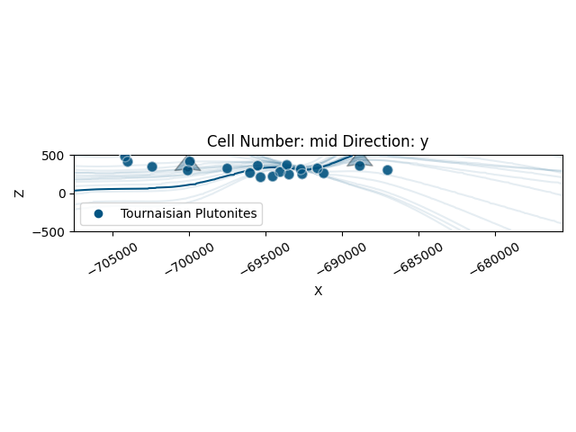<div class="sphx-glr-script-out highlight-none notranslate"><div class="highlight"><pre><span></span>Active grids: GridTypes.OCTREE|NONE
Setting Backend To: AvailableBackends.PYTORCH
Setting Backend To: AvailableBackends.PYTORCH
/home/leguark/PycharmProjects/gempy_viewer/gempy_viewer/modules/plot_2d/drawer_contours_2d.py:38: UserWarning: The following kwargs were not used by contour: &#39;linewidth&#39;, &#39;contour_colors&#39;
  contour_set = ax.contour(
Setting Backend To: AvailableBackends.PYTORCH
Setting Backend To: AvailableBackends.PYTORCH
Setting Backend To: AvailableBackends.PYTORCH
Setting Backend To: AvailableBackends.PYTORCH
Setting Backend To: AvailableBackends.PYTORCH
Setting Backend To: AvailableBackends.PYTORCH
Setting Backend To: AvailableBackends.PYTORCH
Setting Backend To: AvailableBackends.PYTORCH
Setting Backend To: AvailableBackends.PYTORCH
Setting Backend To: AvailableBackends.PYTORCH
Setting Backend To: AvailableBackends.PYTORCH
Setting Backend To: AvailableBackends.PYTORCH
Setting Backend To: AvailableBackends.PYTORCH
Setting Backend To: AvailableBackends.PYTORCH
Setting Backend To: AvailableBackends.PYTORCH
Setting Backend To: AvailableBackends.PYTORCH
Setting Backend To: AvailableBackends.PYTORCH
Setting Backend To: AvailableBackends.PYTORCH
Setting Backend To: AvailableBackends.PYTORCH

&lt;gempy_viewer.modules.plot_2d.visualization_2d.Plot2D object at 0x7fecf8274c80&gt;
</pre></div>
</div>
</section>
<section id="compare-multiple-prior-predictions-to-observations">
<h2>Compare Multiple Prior Predictions to Observations<a class="headerlink" href="#compare-multiple-prior-predictions-to-observations" title="Link to this heading">¶</a></h2>
<p><strong>Understanding plot_many_observed_vs_forward</strong></p>
<p>This diagnostic plot shows how well different prior samples fit the data.
It helps answer: “Can ANY model from our prior explain the observations?”</p>
<p><strong>Plot Structure</strong>:</p>
<ul class="simple">
<li><p><strong>X-axis</strong>: Observed magnetics (sorted by value for clarity)</p></li>
<li><p><strong>Y-axis</strong>: Forward-modeled magnetics from different prior samples</p></li>
<li><p><strong>Each colored line</strong>: One realization from the prior distribution</p></li>
<li><p><strong>Red dashed line</strong>: Perfect 1:1 agreement</p></li>
</ul>
<div class="highlight-Python notranslate"><div class="highlight"><pre><span></span><span class="n">plot_many_observed_vs_forward</span><span class="p">(</span>
    <span class="n">forward_norm</span><span class="o">=</span><span class="p">(</span><span class="n">align_forward_to_observed</span><span class="p">(</span><span class="n">baseline_fw_magnetics_np</span><span class="p">,</span> <span class="n">norm_params</span><span class="p">)),</span>
    <span class="n">many_forward_norm</span><span class="o">=</span><span class="n">prior_inference_data</span><span class="o">.</span><span class="n">prior</span><span class="p">[</span><span class="sa">r</span><span class="s1">&#39;$\mu_</span><span class="si">{magnetics}</span><span class="s1">$&#39;</span><span class="p">]</span><span class="o">.</span><span class="n">values</span><span class="p">[</span><span class="mi">0</span><span class="p">,</span> <span class="o">-</span><span class="mi">10</span><span class="p">:],</span>
    <span class="n">observed_norm</span><span class="o">=</span><span class="n">observed_magnetics_nt</span><span class="p">,</span>
    <span class="n">unit_label</span><span class="o">=</span><span class="s1">&#39;nT&#39;</span>
<span class="p">)</span>
</pre></div>
</div>
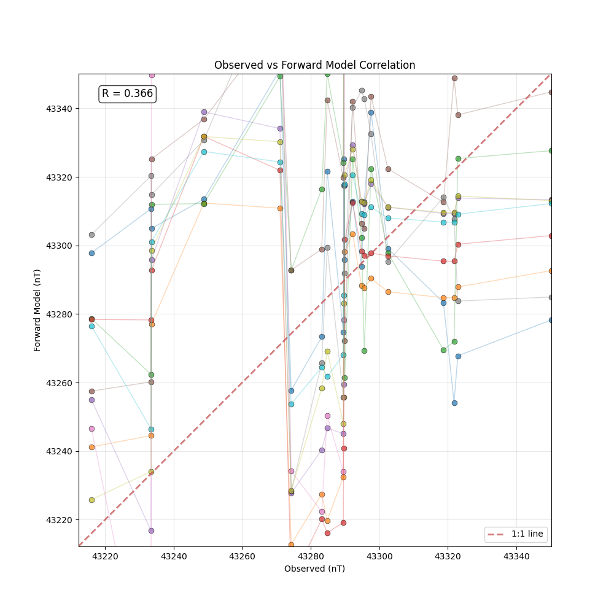</section>
<section id="step-10-load-pre-computed-results">
<h2>Step 10: Load Pre-computed Results<a class="headerlink" href="#step-10-load-pre-computed-results" title="Link to this heading">¶</a></h2>
<p>To save computation time, we load results from a previous MCMC run.
The simulation was performed with the same configuration as the gravity
example (200 warmup steps, 200 samples, NUTS sampler).</p>
<p>To run the inference yourself, set RUN_SIMULATION = True below.</p>
<div class="highlight-Python notranslate"><div class="highlight"><pre><span></span><span class="n">RUN_SIMULATION</span> <span class="o">=</span> <span class="kc">False</span>

<span class="k">if</span> <span class="n">RUN_SIMULATION</span><span class="p">:</span>
    <span class="nb">print</span><span class="p">(</span><span class="s2">&quot;</span><span class="se">\n</span><span class="s2">Running NUTS inference...&quot;</span><span class="p">)</span>

    <span class="n">magnetic_observations_tensor</span> <span class="o">=</span> <span class="n">torch</span><span class="o">.</span><span class="n">tensor</span><span class="p">(</span><span class="n">observed_magnetics_nt</span><span class="p">)</span>

    <span class="c1"># Prior predictive checks</span>
    <span class="n">prior_inference_data</span><span class="p">:</span> <span class="n">az</span><span class="o">.</span><span class="n">InferenceData</span> <span class="o">=</span> <span class="n">gpp</span><span class="o">.</span><span class="n">run_predictive</span><span class="p">(</span>
        <span class="n">prob_model</span><span class="o">=</span><span class="n">prob_model</span><span class="p">,</span>
        <span class="n">geo_model</span><span class="o">=</span><span class="n">geo_model</span><span class="p">,</span>
        <span class="n">y_obs_list</span><span class="o">=</span><span class="n">magnetic_observations_tensor</span><span class="p">,</span>
        <span class="n">n_samples</span><span class="o">=</span><span class="mi">100</span><span class="p">,</span>
        <span class="n">plot_trace</span><span class="o">=</span><span class="kc">True</span>
    <span class="p">)</span>

    <span class="c1"># MCMC inference</span>
    <span class="n">data</span> <span class="o">=</span> <span class="n">gpp</span><span class="o">.</span><span class="n">run_nuts_inference</span><span class="p">(</span>
        <span class="n">prob_model</span><span class="o">=</span><span class="n">prob_model</span><span class="p">,</span>
        <span class="n">geo_model</span><span class="o">=</span><span class="n">geo_model</span><span class="p">,</span>
        <span class="n">y_obs_list</span><span class="o">=</span><span class="n">magnetic_observations_tensor</span><span class="p">,</span>
        <span class="n">config</span><span class="o">=</span><span class="n">NUTSConfig</span><span class="p">(</span>
            <span class="n">step_size</span><span class="o">=</span><span class="mf">0.0001</span><span class="p">,</span>
            <span class="n">adapt_step_size</span><span class="o">=</span><span class="kc">True</span><span class="p">,</span>
            <span class="n">target_accept_prob</span><span class="o">=</span><span class="mf">0.65</span><span class="p">,</span>
            <span class="n">max_tree_depth</span><span class="o">=</span><span class="mi">5</span><span class="p">,</span>
            <span class="n">init_strategy</span><span class="o">=</span><span class="s1">&#39;median&#39;</span><span class="p">,</span>
            <span class="n">num_samples</span><span class="o">=</span><span class="mi">200</span><span class="p">,</span>
            <span class="n">warmup_steps</span><span class="o">=</span><span class="mi">200</span><span class="p">,</span>
        <span class="p">),</span>
        <span class="n">plot_trace</span><span class="o">=</span><span class="kc">True</span><span class="p">,</span>
        <span class="n">run_posterior_predictive</span><span class="o">=</span><span class="kc">True</span>
    <span class="p">)</span>

    <span class="n">data</span><span class="o">.</span><span class="n">extend</span><span class="p">(</span><span class="n">prior_inference_data</span><span class="p">)</span>
    <span class="nb">print</span><span class="p">(</span><span class="s2">&quot; NUTS inference complete&quot;</span><span class="p">)</span>

<span class="k">else</span><span class="p">:</span>
    <span class="kn">from</span><span class="w"> </span><span class="nn">pathlib</span><span class="w"> </span><span class="kn">import</span> <span class="n">Path</span>
    <span class="kn">import</span><span class="w"> </span><span class="nn">inspect</span>

    <span class="c1"># Get the directory of the current file</span>
    <span class="n">current_dir</span> <span class="o">=</span> <span class="n">Path</span><span class="p">(</span><span class="n">inspect</span><span class="o">.</span><span class="n">getfile</span><span class="p">(</span><span class="n">inspect</span><span class="o">.</span><span class="n">currentframe</span><span class="p">()))</span><span class="o">.</span><span class="n">parent</span><span class="o">.</span><span class="n">resolve</span><span class="p">()</span>
    <span class="n">data_path</span> <span class="o">=</span> <span class="n">current_dir</span> <span class="o">/</span> <span class="s2">&quot;arviz_data_magnetic_feb2026.nc&quot;</span>

    <span class="k">if</span> <span class="ow">not</span> <span class="n">data_path</span><span class="o">.</span><span class="n">exists</span><span class="p">():</span>
        <span class="k">raise</span> <span class="ne">FileNotFoundError</span><span class="p">(</span>
            <span class="sa">f</span><span class="s2">&quot;Data file not found at </span><span class="si">{</span><span class="n">data_path</span><span class="si">}</span><span class="s2">. &quot;</span>
            <span class="sa">f</span><span class="s2">&quot;Please run the simulation first with RUN_SIMULATION=True&quot;</span>
        <span class="p">)</span>

    <span class="c1"># Read the data file</span>
    <span class="n">data</span> <span class="o">=</span> <span class="n">az</span><span class="o">.</span><span class="n">from_netcdf</span><span class="p">(</span><span class="nb">str</span><span class="p">(</span><span class="n">data_path</span><span class="p">))</span>
    <span class="nb">print</span><span class="p">(</span><span class="sa">f</span><span class="s2">&quot; Loaded inference results from </span><span class="si">{</span><span class="n">data_path</span><span class="si">}</span><span class="s2">&quot;</span><span class="p">)</span>
</pre></div>
</div>
<div class="sphx-glr-script-out highlight-none notranslate"><div class="highlight"><pre><span></span> Loaded inference results from /home/leguark/PycharmProjects/Mineye-Terranigma/examples/02_probabilistic_modeling/arviz_data_magnetic_feb2026.nc
</pre></div>
</div>
<p><strong>Interactive: Pre-computed Results</strong></p>
<p>Running full MCMC chains can be computationally expensive. For convenience,
pre-computed <cite>.nc</cite> files (ArviZ InferenceData) are available for download.</p>
<p>To use them:
1. Download <cite>arviz_data_05.nc</cite> from the project repository.
2. Place it in the same directory as this script.
3. Set <cite>RUN_SIMULATION = False</cite> to load the results instantly.</p>
</section>
<section id="analysis-parameter-posterior-statistics">
<h2>Analysis: Parameter Posterior Statistics<a class="headerlink" href="#analysis-parameter-posterior-statistics" title="Link to this heading">¶</a></h2>
<div class="highlight-Python notranslate"><div class="highlight"><pre><span></span><span class="n">posterior_dips</span> <span class="o">=</span> <span class="n">data</span><span class="o">.</span><span class="n">posterior</span><span class="p">[</span><span class="s1">&#39;dips&#39;</span><span class="p">]</span><span class="o">.</span><span class="n">values</span>
<span class="nb">print</span><span class="p">(</span><span class="sa">f</span><span class="s2">&quot;</span><span class="se">\n</span><span class="s2">Posterior dip statistics:&quot;</span><span class="p">)</span>
<span class="nb">print</span><span class="p">(</span><span class="sa">f</span><span class="s2">&quot;  Shape: </span><span class="si">{</span><span class="n">posterior_dips</span><span class="o">.</span><span class="n">shape</span><span class="si">}</span><span class="s2">&quot;</span><span class="p">)</span>
<span class="nb">print</span><span class="p">(</span><span class="sa">f</span><span class="s2">&quot;  Mean: </span><span class="si">{</span><span class="n">posterior_dips</span><span class="o">.</span><span class="n">mean</span><span class="p">()</span><span class="si">:</span><span class="s2">.2f</span><span class="si">}</span><span class="s2">�&quot;</span><span class="p">)</span>
<span class="nb">print</span><span class="p">(</span><span class="sa">f</span><span class="s2">&quot;  Std: </span><span class="si">{</span><span class="n">posterior_dips</span><span class="o">.</span><span class="n">std</span><span class="p">()</span><span class="si">:</span><span class="s2">.2f</span><span class="si">}</span><span class="s2">�&quot;</span><span class="p">)</span>

<span class="n">posterior_suscept</span> <span class="o">=</span> <span class="n">data</span><span class="o">.</span><span class="n">posterior</span><span class="p">[</span><span class="s1">&#39;susceptibility&#39;</span><span class="p">]</span><span class="o">.</span><span class="n">values</span>
<span class="nb">print</span><span class="p">(</span><span class="sa">f</span><span class="s2">&quot;</span><span class="se">\n</span><span class="s2">Posterior susceptibility statistics:&quot;</span><span class="p">)</span>
<span class="nb">print</span><span class="p">(</span><span class="sa">f</span><span class="s2">&quot;  Plutonites - Mean: </span><span class="si">{</span><span class="n">posterior_suscept</span><span class="p">[:,</span><span class="w"> </span><span class="p">:,</span><span class="w"> </span><span class="mi">0</span><span class="p">]</span><span class="o">.</span><span class="n">mean</span><span class="p">()</span><span class="si">:</span><span class="s2">.4f</span><span class="si">}</span><span class="s2"> SI&quot;</span><span class="p">)</span>
<span class="nb">print</span><span class="p">(</span><span class="sa">f</span><span class="s2">&quot;  Plutonites - Std: </span><span class="si">{</span><span class="n">posterior_suscept</span><span class="p">[:,</span><span class="w"> </span><span class="p">:,</span><span class="w"> </span><span class="mi">0</span><span class="p">]</span><span class="o">.</span><span class="n">std</span><span class="p">()</span><span class="si">:</span><span class="s2">.4f</span><span class="si">}</span><span class="s2"> SI&quot;</span><span class="p">)</span>
<span class="nb">print</span><span class="p">(</span><span class="sa">f</span><span class="s2">&quot;  Host rock - Mean: </span><span class="si">{</span><span class="n">posterior_suscept</span><span class="p">[:,</span><span class="w"> </span><span class="p">:,</span><span class="w"> </span><span class="mi">1</span><span class="p">]</span><span class="o">.</span><span class="n">mean</span><span class="p">()</span><span class="si">:</span><span class="s2">.4f</span><span class="si">}</span><span class="s2"> SI&quot;</span><span class="p">)</span>
<span class="nb">print</span><span class="p">(</span><span class="sa">f</span><span class="s2">&quot;  Host rock - Std: </span><span class="si">{</span><span class="n">posterior_suscept</span><span class="p">[:,</span><span class="w"> </span><span class="p">:,</span><span class="w"> </span><span class="mi">1</span><span class="p">]</span><span class="o">.</span><span class="n">std</span><span class="p">()</span><span class="si">:</span><span class="s2">.4f</span><span class="si">}</span><span class="s2"> SI&quot;</span><span class="p">)</span>

<span class="k">if</span> <span class="nb">hasattr</span><span class="p">(</span><span class="n">data</span><span class="p">,</span> <span class="s1">&#39;prior&#39;</span><span class="p">):</span>
    <span class="n">prior_dips</span> <span class="o">=</span> <span class="n">data</span><span class="o">.</span><span class="n">prior</span><span class="p">[</span><span class="s1">&#39;dips&#39;</span><span class="p">]</span><span class="o">.</span><span class="n">values</span>
    <span class="n">uncertainty_reduction</span> <span class="o">=</span> <span class="p">(</span><span class="mi">1</span> <span class="o">-</span> <span class="n">posterior_dips</span><span class="o">.</span><span class="n">std</span><span class="p">()</span> <span class="o">/</span> <span class="n">prior_dips</span><span class="o">.</span><span class="n">std</span><span class="p">())</span> <span class="o">*</span> <span class="mi">100</span>
    <span class="nb">print</span><span class="p">(</span><span class="sa">f</span><span class="s2">&quot;</span><span class="se">\n</span><span class="s2">Uncertainty reduction in dips: </span><span class="si">{</span><span class="n">uncertainty_reduction</span><span class="si">:</span><span class="s2">.1f</span><span class="si">}</span><span class="s2">%&quot;</span><span class="p">)</span>
</pre></div>
</div>
<div class="sphx-glr-script-out highlight-none notranslate"><div class="highlight"><pre><span></span>Posterior dip statistics:
  Shape: (1, 200, 2)
  Mean: 9.97�
  Std: 6.77�

Posterior susceptibility statistics:
  Plutonites - Mean: 0.0395 SI
  Plutonites - Std: 0.0075 SI
  Host rock - Mean: 0.0011 SI
  Host rock - Std: 0.0019 SI

Uncertainty reduction in dips: 32.5%
</pre></div>
</div>
</section>
<section id="analysis-predictive-performance">
<h2>Analysis: Predictive Performance<a class="headerlink" href="#analysis-predictive-performance" title="Link to this heading">¶</a></h2>
<div class="highlight-Python notranslate"><div class="highlight"><pre><span></span><span class="n">posterior_magnetics</span> <span class="o">=</span> <span class="n">data</span><span class="o">.</span><span class="n">posterior_predictive</span><span class="p">[</span><span class="s1">&#39;Magnetic Measurement&#39;</span><span class="p">]</span><span class="o">.</span><span class="n">values</span>
<span class="nb">print</span><span class="p">(</span><span class="sa">f</span><span class="s2">&quot;</span><span class="se">\n</span><span class="s2">Posterior predictive magnetics:&quot;</span><span class="p">)</span>
<span class="nb">print</span><span class="p">(</span><span class="sa">f</span><span class="s2">&quot;  Mean: </span><span class="si">{</span><span class="n">posterior_magnetics</span><span class="o">.</span><span class="n">mean</span><span class="p">()</span><span class="si">:</span><span class="s2">.1f</span><span class="si">}</span><span class="s2"> nT&quot;</span><span class="p">)</span>
<span class="nb">print</span><span class="p">(</span><span class="sa">f</span><span class="s2">&quot;  Std: </span><span class="si">{</span><span class="n">posterior_magnetics</span><span class="o">.</span><span class="n">std</span><span class="p">()</span><span class="si">:</span><span class="s2">.1f</span><span class="si">}</span><span class="s2"> nT&quot;</span><span class="p">)</span>

<span class="n">residuals</span> <span class="o">=</span> <span class="n">posterior_magnetics</span><span class="o">.</span><span class="n">mean</span><span class="p">(</span><span class="n">axis</span><span class="o">=</span><span class="p">(</span><span class="mi">0</span><span class="p">,</span> <span class="mi">1</span><span class="p">))</span> <span class="o">-</span> <span class="n">observed_magnetics_nt</span>
<span class="nb">print</span><span class="p">(</span><span class="sa">f</span><span class="s2">&quot;</span><span class="se">\n</span><span class="s2">Residuals (posterior mean - observed):&quot;</span><span class="p">)</span>
<span class="nb">print</span><span class="p">(</span><span class="sa">f</span><span class="s2">&quot;  Mean: </span><span class="si">{</span><span class="n">residuals</span><span class="o">.</span><span class="n">mean</span><span class="p">()</span><span class="si">:</span><span class="s2">.2f</span><span class="si">}</span><span class="s2"> nT (bias)&quot;</span><span class="p">)</span>
<span class="nb">print</span><span class="p">(</span><span class="sa">f</span><span class="s2">&quot;  RMS: </span><span class="si">{</span><span class="n">np</span><span class="o">.</span><span class="n">sqrt</span><span class="p">((</span><span class="n">residuals</span><span class="w"> </span><span class="o">**</span><span class="w"> </span><span class="mi">2</span><span class="p">)</span><span class="o">.</span><span class="n">mean</span><span class="p">())</span><span class="si">:</span><span class="s2">.2f</span><span class="si">}</span><span class="s2"> nT (fit quality)&quot;</span><span class="p">)</span>
</pre></div>
</div>
<div class="sphx-glr-script-out highlight-none notranslate"><div class="highlight"><pre><span></span>Posterior predictive magnetics:
  Mean: 43285.5 nT
  Std: 32.1 nT

Residuals (posterior mean - observed):
  Mean: -0.00 nT (bias)
  RMS: 0.00 nT (fit quality)
</pre></div>
</div>
</section>
<section id="posterior-predictive-model-fit-analysis">
<h2>Posterior Predictive: Model Fit Analysis<a class="headerlink" href="#posterior-predictive-model-fit-analysis" title="Link to this heading">¶</a></h2>
<p><strong>Understanding Posterior Convergence</strong></p>
<p>In the plot_many_observed_vs_forward visualization, we observe that no single model
can perfectly explain all observations simultaneously. This reveals an important aspect
of Bayesian inference: the posterior distribution identifies models that best balance
the fit across all measurement stations.</p>
<p><strong>What the inference is doing</strong>:</p>
<p>The MCMC sampler finds parameter combinations that bring the maximum number of
observations close to their measured values. Rather than perfectly fitting a subset
of stations, the posterior concentrates on models that provide reasonable explanations
across the entire dataset. This “compromise” solution is mathematically optimal under
our likelihood model.</p>
<p><strong>Geometric constraints from data</strong>:</p>
<p>Even with this distributed fit, the magnetic data significantly constrains the possible
geological configurations. As visualized in gempy_viz, the posterior distribution shows
much tighter bounds on structural geometry than the prior. The inference has successfully
ruled out large regions of parameter space that are inconsistent with observations.</p>
<p><strong>Implications</strong>:</p>
<ul class="simple">
<li><p>Stations that remain poorly fit may indicate localized geological complexity not
captured by our current model structure</p></li>
<li><p>The spread in posterior predictions quantifies irreducible uncertainty given model
assumptions</p></li>
<li><p>Future model refinements (additional layers, spatially-varying susceptibilities) could
improve station-by-station fit while maintaining these geometric constraints</p></li>
</ul>
<div class="highlight-Python notranslate"><div class="highlight"><pre><span></span><span class="n">plot_many_observed_vs_forward</span><span class="p">(</span>
    <span class="n">forward_norm</span><span class="o">=</span><span class="p">(</span><span class="n">align_forward_to_observed</span><span class="p">(</span><span class="n">baseline_fw_magnetics_np</span><span class="p">,</span> <span class="n">norm_params</span><span class="p">)),</span>
    <span class="n">many_forward_norm</span><span class="o">=</span><span class="n">data</span><span class="o">.</span><span class="n">posterior_predictive</span><span class="p">[</span><span class="sa">r</span><span class="s1">&#39;$\mu_</span><span class="si">{magnetics}</span><span class="s1">$&#39;</span><span class="p">]</span><span class="o">.</span><span class="n">values</span><span class="p">[</span><span class="mi">0</span><span class="p">,</span> <span class="o">-</span><span class="mi">20</span><span class="p">:],</span>
    <span class="n">observed_norm</span><span class="o">=</span><span class="n">observed_magnetics_nt</span><span class="p">,</span>
    <span class="n">unit_label</span><span class="o">=</span><span class="s1">&#39;nT&#39;</span>
<span class="p">)</span>
</pre></div>
</div>
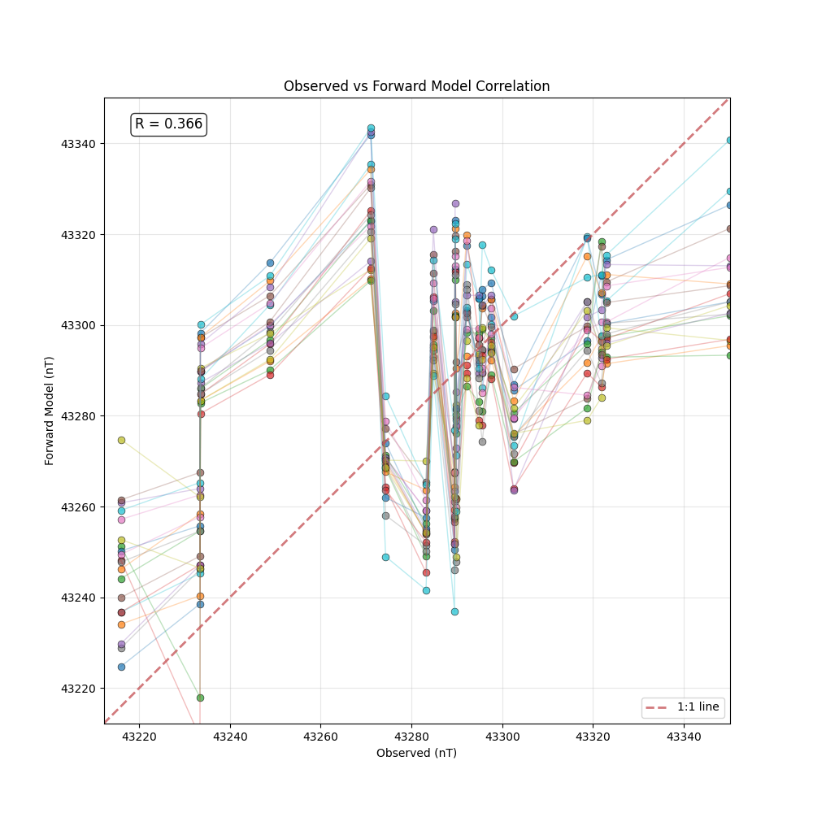<p>Density plots comparing prior and posterior distributions</p>
<div class="highlight-Python notranslate"><div class="highlight"><pre><span></span><span class="n">az</span><span class="o">.</span><span class="n">plot_density</span><span class="p">(</span>
    <span class="n">data</span><span class="o">=</span><span class="p">[</span><span class="n">data</span><span class="p">,</span> <span class="n">data</span><span class="o">.</span><span class="n">prior</span><span class="p">],</span>
    <span class="n">var_names</span><span class="o">=</span><span class="p">[</span><span class="s2">&quot;dips&quot;</span><span class="p">,</span> <span class="s2">&quot;susceptibility&quot;</span><span class="p">],</span>
    <span class="n">filter_vars</span><span class="o">=</span><span class="s2">&quot;like&quot;</span><span class="p">,</span>
    <span class="n">hdi_prob</span><span class="o">=</span><span class="mf">0.9999</span><span class="p">,</span>
    <span class="n">shade</span><span class="o">=</span><span class="mf">.2</span><span class="p">,</span>
    <span class="n">data_labels</span><span class="o">=</span><span class="p">[</span><span class="s2">&quot;Posterior&quot;</span><span class="p">,</span> <span class="s2">&quot;Prior&quot;</span><span class="p">],</span>
    <span class="n">colors</span><span class="o">=</span><span class="p">[</span><span class="n">default_red</span><span class="p">,</span> <span class="n">default_blue</span><span class="p">],</span>
<span class="p">)</span>
</pre></div>
</div>
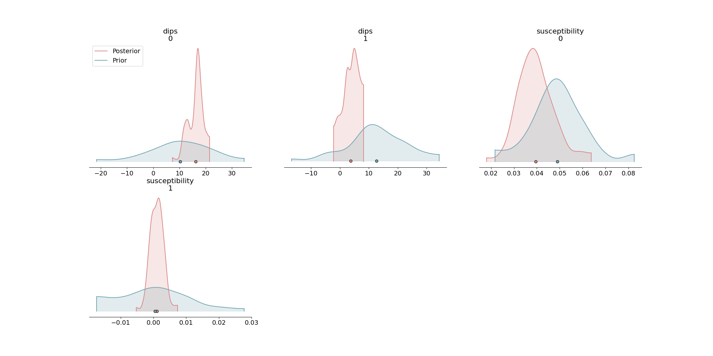<div class="sphx-glr-script-out highlight-none notranslate"><div class="highlight"><pre><span></span>array([[&lt;Axes: title={&#39;center&#39;: &#39;dips\n0&#39;}&gt;,
        &lt;Axes: title={&#39;center&#39;: &#39;dips\n1&#39;}&gt;,
        &lt;Axes: title={&#39;center&#39;: &#39;susceptibility\n0&#39;}&gt;],
       [&lt;Axes: title={&#39;center&#39;: &#39;susceptibility\n1&#39;}&gt;, &lt;Axes: &gt;,
        &lt;Axes: &gt;]], dtype=object)
</pre></div>
</div>
</section>
<section id="geological-model-uncertainty-visualization">
<h2>Geological Model Uncertainty Visualization<a class="headerlink" href="#geological-model-uncertainty-visualization" title="Link to this heading">¶</a></h2>
<div class="highlight-Python notranslate"><div class="highlight"><pre><span></span><span class="n">gempy_viz</span><span class="p">(</span>
    <span class="n">geo_model</span><span class="o">=</span><span class="n">geo_model</span><span class="p">,</span>
    <span class="n">prior_inference_data</span><span class="o">=</span><span class="n">data</span><span class="p">,</span>
    <span class="n">n_samples</span><span class="o">=</span><span class="mi">20</span>
<span class="p">)</span>
</pre></div>
</div>
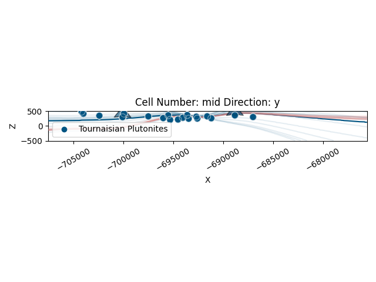<div class="sphx-glr-script-out highlight-none notranslate"><div class="highlight"><pre><span></span>Active grids: GridTypes.OCTREE|NONE
Setting Backend To: AvailableBackends.PYTORCH
Setting Backend To: AvailableBackends.PYTORCH
/home/leguark/PycharmProjects/gempy_viewer/gempy_viewer/modules/plot_2d/drawer_contours_2d.py:38: UserWarning: The following kwargs were not used by contour: &#39;linewidth&#39;, &#39;contour_colors&#39;
  contour_set = ax.contour(
Setting Backend To: AvailableBackends.PYTORCH
Setting Backend To: AvailableBackends.PYTORCH
Setting Backend To: AvailableBackends.PYTORCH
Setting Backend To: AvailableBackends.PYTORCH
Setting Backend To: AvailableBackends.PYTORCH
Setting Backend To: AvailableBackends.PYTORCH
Setting Backend To: AvailableBackends.PYTORCH
Setting Backend To: AvailableBackends.PYTORCH
Setting Backend To: AvailableBackends.PYTORCH
Setting Backend To: AvailableBackends.PYTORCH
Setting Backend To: AvailableBackends.PYTORCH
Setting Backend To: AvailableBackends.PYTORCH
Setting Backend To: AvailableBackends.PYTORCH
Setting Backend To: AvailableBackends.PYTORCH
Setting Backend To: AvailableBackends.PYTORCH
Setting Backend To: AvailableBackends.PYTORCH
Setting Backend To: AvailableBackends.PYTORCH
Setting Backend To: AvailableBackends.PYTORCH
Setting Backend To: AvailableBackends.PYTORCH
Setting Backend To: AvailableBackends.PYTORCH
Setting Backend To: AvailableBackends.PYTORCH
Setting Backend To: AvailableBackends.PYTORCH
Setting Backend To: AvailableBackends.PYTORCH
Setting Backend To: AvailableBackends.PYTORCH
Setting Backend To: AvailableBackends.PYTORCH
Setting Backend To: AvailableBackends.PYTORCH
Setting Backend To: AvailableBackends.PYTORCH
Setting Backend To: AvailableBackends.PYTORCH
Setting Backend To: AvailableBackends.PYTORCH
Setting Backend To: AvailableBackends.PYTORCH
Setting Backend To: AvailableBackends.PYTORCH
Setting Backend To: AvailableBackends.PYTORCH
Setting Backend To: AvailableBackends.PYTORCH
Setting Backend To: AvailableBackends.PYTORCH
Setting Backend To: AvailableBackends.PYTORCH
Setting Backend To: AvailableBackends.PYTORCH
Setting Backend To: AvailableBackends.PYTORCH
Setting Backend To: AvailableBackends.PYTORCH
Setting Backend To: AvailableBackends.PYTORCH

&lt;gempy_viewer.modules.plot_2d.visualization_2d.Plot2D object at 0x7fecf2f2cad0&gt;
</pre></div>
</div>
<p>Spatial Comparison: Prior Predictions</p>
<div class="highlight-Python notranslate"><div class="highlight"><pre><span></span><span class="n">plot_geophysics_comparison</span><span class="p">(</span>
    <span class="n">forward_norm</span><span class="o">=</span><span class="n">data</span><span class="o">.</span><span class="n">prior</span><span class="p">[</span><span class="sa">r</span><span class="s1">&#39;$\mu_</span><span class="si">{magnetics}</span><span class="s1">$&#39;</span><span class="p">]</span><span class="o">.</span><span class="n">mean</span><span class="p">(</span><span class="n">axis</span><span class="o">=</span><span class="mi">1</span><span class="p">),</span>
    <span class="n">normalization_method</span><span class="o">=</span><span class="s1">&#39;align_to_reference&#39;</span><span class="p">,</span>
    <span class="n">observed_ugal</span><span class="o">=</span><span class="n">observed_magnetics_nt</span><span class="p">,</span>
    <span class="n">xy_ravel</span><span class="o">=</span><span class="n">xy_ravel</span>
<span class="p">)</span>
</pre></div>
</div>
<p>Spatial Comparison: Posterior Predictions</p>
<div class="highlight-Python notranslate"><div class="highlight"><pre><span></span><span class="n">plot_geophysics_comparison</span><span class="p">(</span>
    <span class="n">forward_norm</span><span class="o">=</span><span class="n">data</span><span class="o">.</span><span class="n">posterior_predictive</span><span class="p">[</span><span class="sa">r</span><span class="s1">&#39;$\mu_</span><span class="si">{magnetics}</span><span class="s1">$&#39;</span><span class="p">]</span><span class="o">.</span><span class="n">mean</span><span class="p">(</span><span class="n">axis</span><span class="o">=</span><span class="mi">1</span><span class="p">),</span>
    <span class="n">normalization_method</span><span class="o">=</span><span class="s1">&#39;align_to_reference&#39;</span><span class="p">,</span>
    <span class="n">observed_ugal</span><span class="o">=</span><span class="n">observed_magnetics_nt</span><span class="p">,</span>
    <span class="n">xy_ravel</span><span class="o">=</span><span class="n">xy_ravel</span>
<span class="p">)</span>
</pre></div>
</div>
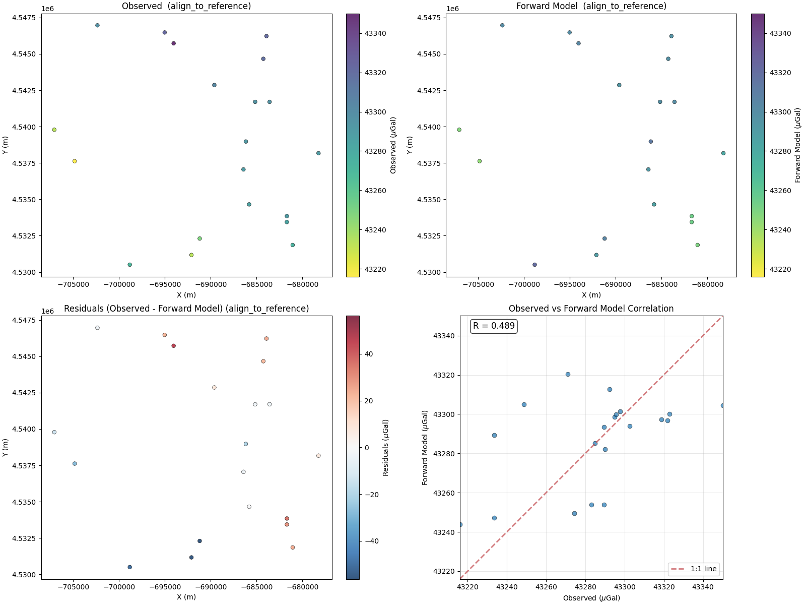<p>Uncertainty Quantification: Prior</p>
<div class="highlight-Python notranslate"><div class="highlight"><pre><span></span><span class="n">gravity_samples_norm</span><span class="p">,</span> <span class="n">unit_label</span> <span class="o">=</span> <span class="n">generate_gravity_uncertainty_plots</span><span class="p">(</span>
    <span class="n">gravity_samples_norm</span><span class="o">=</span><span class="n">data</span><span class="o">.</span><span class="n">prior</span><span class="p">[</span><span class="sa">r</span><span class="s1">&#39;$\mu_</span><span class="si">{magnetics}</span><span class="s1">$&#39;</span><span class="p">]</span><span class="o">.</span><span class="n">values</span><span class="p">[</span><span class="mi">0</span><span class="p">,</span> <span class="p">:],</span>
    <span class="n">observed_gravity_ugal</span><span class="o">=</span><span class="n">observed_magnetics_nt</span><span class="p">,</span>
    <span class="n">xy_ravel</span><span class="o">=</span><span class="n">xy_ravel</span>
<span class="p">)</span>
</pre></div>
</div>
<ul class="sphx-glr-horizontal">
<li>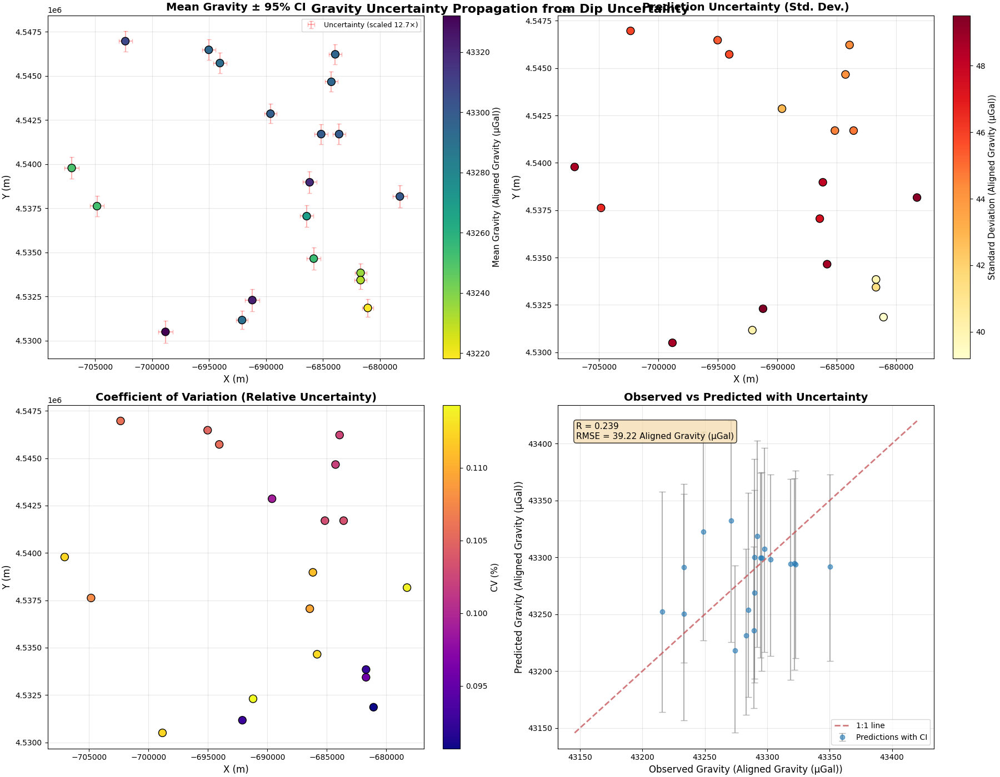</li>
<li>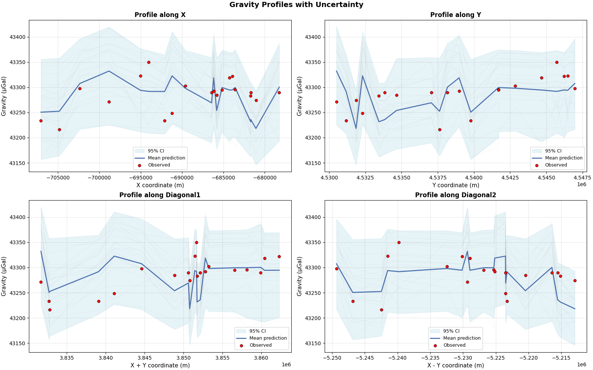</li>
<li>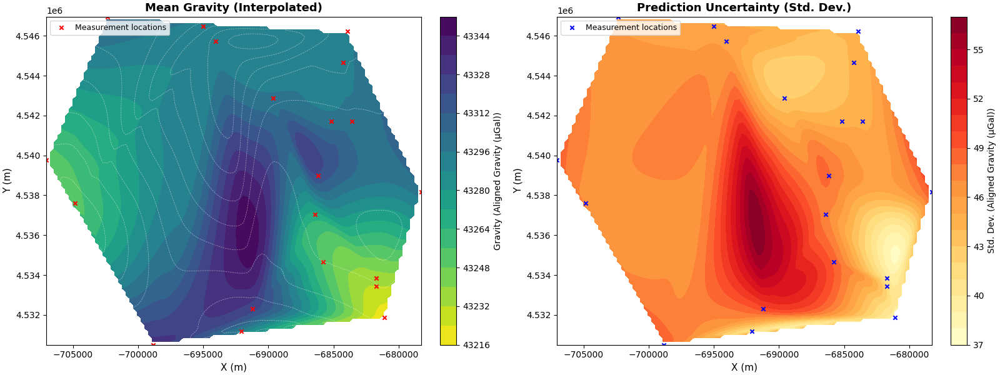</li>
</ul>
<div class="sphx-glr-script-out highlight-none notranslate"><div class="highlight"><pre><span></span>============================================================
EXTRACTED NORMALIZED SAMPLES
============================================================
Number of samples: 100
Number of devices: 20
Normalization was applied DURING inference (not post-processing)
All samples use consistent normalization parameters from observed data
============================================================


============================================================
UNCERTAINTY SUMMARY STATISTICS
============================================================
Mean gravity:        43282.82 ± 31.28 μGal
Mean uncertainty:    45.28 μGal
Max uncertainty:     49.52 μGal
Min uncertainty:     39.20 μGal
Mean CV:             0.10%
RMSE:                39.22 μGal
Correlation (R):     0.239
============================================================
</pre></div>
</div>
<p>Uncertainty Quantification: Posterior</p>
<div class="highlight-Python notranslate"><div class="highlight"><pre><span></span><span class="k">if</span> <span class="nb">hasattr</span><span class="p">(</span><span class="n">data</span><span class="p">,</span> <span class="s1">&#39;posterior_predictive&#39;</span><span class="p">)</span> <span class="ow">and</span> <span class="sa">r</span><span class="s1">&#39;$\mu_</span><span class="si">{magnetics}</span><span class="s1">$&#39;</span> <span class="ow">in</span> <span class="n">data</span><span class="o">.</span><span class="n">posterior_predictive</span><span class="p">:</span>
    <span class="n">gravity_samples_norm</span><span class="p">,</span> <span class="n">unit_label</span> <span class="o">=</span> <span class="n">generate_gravity_uncertainty_plots</span><span class="p">(</span>
        <span class="n">gravity_samples_norm</span><span class="o">=</span><span class="n">data</span><span class="o">.</span><span class="n">posterior_predictive</span><span class="p">[</span><span class="sa">r</span><span class="s1">&#39;$\mu_</span><span class="si">{magnetics}</span><span class="s1">$&#39;</span><span class="p">]</span><span class="o">.</span><span class="n">values</span><span class="p">[</span><span class="mi">0</span><span class="p">,</span> <span class="p">:],</span>
        <span class="n">observed_gravity_ugal</span><span class="o">=</span><span class="n">observed_magnetics_nt</span><span class="p">,</span>
        <span class="n">xy_ravel</span><span class="o">=</span><span class="n">xy_ravel</span>
    <span class="p">)</span>
</pre></div>
</div>
<ul class="sphx-glr-horizontal">
<li>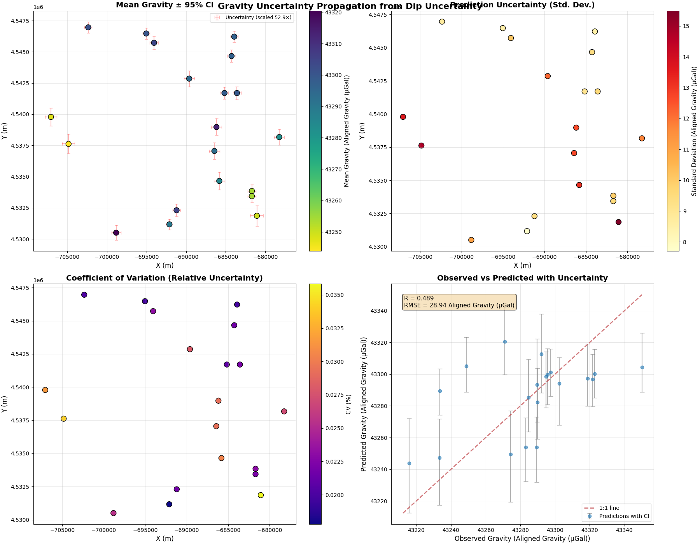</li>
<li>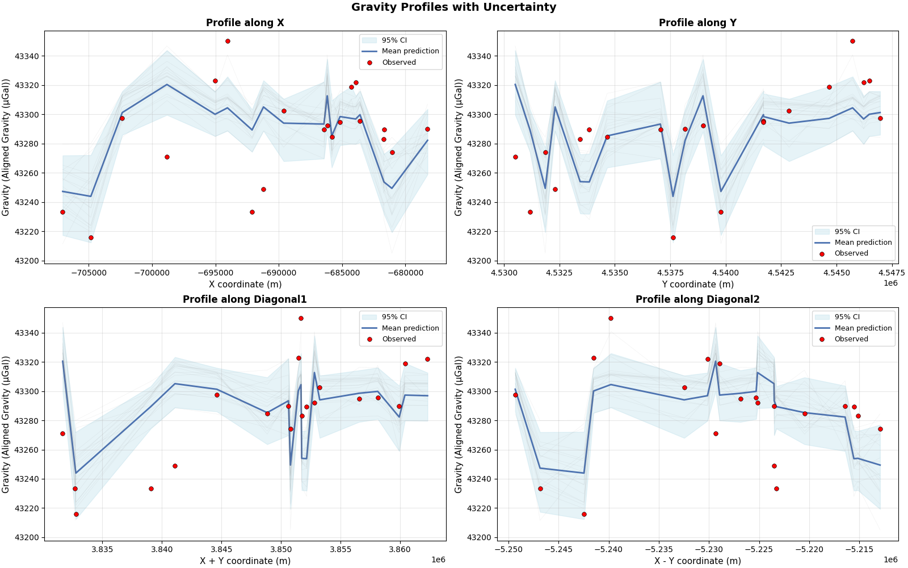</li>
<li>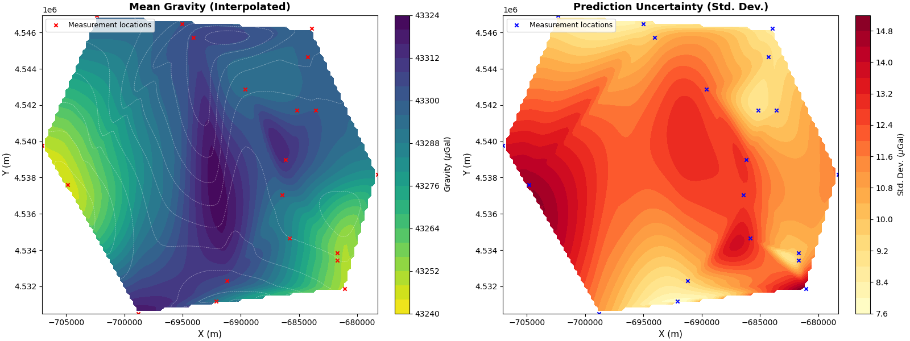</li>
</ul>
<div class="sphx-glr-script-out highlight-none notranslate"><div class="highlight"><pre><span></span>============================================================
EXTRACTED NORMALIZED SAMPLES
============================================================
Number of samples: 200
Number of devices: 20
Normalization was applied DURING inference (not post-processing)
All samples use consistent normalization parameters from observed data
============================================================


============================================================
UNCERTAINTY SUMMARY STATISTICS
============================================================
Mean gravity:        43286.47 ± 22.85 μGal
Mean uncertainty:    10.89 μGal
Max uncertainty:     15.50 μGal
Min uncertainty:     7.71 μGal
Mean CV:             0.03%
RMSE:                28.94 μGal
Correlation (R):     0.489
============================================================
</pre></div>
</div>
<p><strong>Sigma Analysis: Outlier Detection</strong></p>
<p>Hierarchical modeling allows us to identify stations with unusually high noise,
which may indicate instrument problems, terrain correction errors, or localized
geological complexity not captured by the model.</p>
<div class="highlight-Python notranslate"><div class="highlight"><pre><span></span><span class="k">if</span> <span class="s2">&quot;sigma_stations&quot;</span> <span class="ow">in</span> <span class="n">data</span><span class="o">.</span><span class="n">posterior_predictive</span><span class="p">:</span>
    <span class="n">posterior_sigmas</span> <span class="o">=</span> <span class="n">data</span><span class="o">.</span><span class="n">posterior_predictive</span><span class="p">[</span><span class="s2">&quot;sigma_stations&quot;</span><span class="p">]</span><span class="o">.</span><span class="n">values</span>
    <span class="n">station_noise_mean</span> <span class="o">=</span> <span class="n">posterior_sigmas</span><span class="o">.</span><span class="n">mean</span><span class="p">(</span><span class="n">axis</span><span class="o">=</span><span class="p">(</span><span class="mi">0</span><span class="p">,</span> <span class="mi">1</span><span class="p">))</span>
    <span class="n">sigma_global_mean</span> <span class="o">=</span> <span class="n">station_noise_mean</span><span class="o">.</span><span class="n">mean</span><span class="p">()</span>

    <span class="c1"># Identify stations with noise &gt; 2 standard deviations above mean</span>
    <span class="n">problematic</span> <span class="o">=</span> <span class="n">np</span><span class="o">.</span><span class="n">where</span><span class="p">(</span><span class="n">station_noise_mean</span> <span class="o">&gt;</span> <span class="mi">2</span> <span class="o">*</span> <span class="n">sigma_global_mean</span><span class="p">)[</span><span class="mi">0</span><span class="p">]</span>
    <span class="nb">print</span><span class="p">(</span><span class="sa">f</span><span class="s2">&quot;</span><span class="se">\n</span><span class="s2">Potential outlier stations identified: </span><span class="si">{</span><span class="n">problematic</span><span class="si">}</span><span class="s2">&quot;</span><span class="p">)</span>

    <span class="c1"># Plot sigma distribution</span>
    <span class="n">az</span><span class="o">.</span><span class="n">plot_density</span><span class="p">(</span>
        <span class="n">data</span><span class="o">=</span><span class="p">[</span><span class="n">data</span><span class="p">,</span> <span class="n">data</span><span class="o">.</span><span class="n">prior</span><span class="p">],</span>
        <span class="n">var_names</span><span class="o">=</span><span class="p">[</span><span class="s2">&quot;sigma_stations&quot;</span><span class="p">],</span>
        <span class="n">filter_vars</span><span class="o">=</span><span class="s2">&quot;like&quot;</span><span class="p">,</span>
        <span class="n">hdi_prob</span><span class="o">=</span><span class="mf">0.9999</span><span class="p">,</span>
        <span class="n">shade</span><span class="o">=</span><span class="mf">.2</span><span class="p">,</span>
        <span class="n">data_labels</span><span class="o">=</span><span class="p">[</span><span class="s2">&quot;Posterior&quot;</span><span class="p">,</span> <span class="s2">&quot;Prior&quot;</span><span class="p">],</span>
        <span class="n">colors</span><span class="o">=</span><span class="p">[</span><span class="n">default_red</span><span class="p">,</span> <span class="n">default_blue</span><span class="p">],</span>
    <span class="p">)</span>
    <span class="n">plt</span><span class="o">.</span><span class="n">title</span><span class="p">(</span><span class="s2">&quot;Per-Station Noise Distribution (Sigma)&quot;</span><span class="p">)</span>
    <span class="n">plt</span><span class="o">.</span><span class="n">show</span><span class="p">()</span>
</pre></div>
</div>
<div class="sphx-glr-script-out highlight-none notranslate"><div class="highlight"><pre><span></span>Potential outlier stations identified: []
</pre></div>
</div>
<p><strong>Probability Density Fields and Information Entropy</strong></p>
<p>To visualize the spatial uncertainty of the geological structure, we compute
probability density fields and information entropy.</p>
<div class="highlight-Python notranslate"><div class="highlight"><pre><span></span><span class="c1"># Resetting the model</span>
<span class="n">geo_model</span> <span class="o">=</span> <span class="n">gp</span><span class="o">.</span><span class="n">create_geomodel</span><span class="p">(</span>
    <span class="n">project_name</span><span class="o">=</span><span class="s1">&#39;gravity_inversion&#39;</span><span class="p">,</span>
    <span class="n">extent</span><span class="o">=</span><span class="n">extent</span><span class="p">,</span>
    <span class="n">refinement</span><span class="o">=</span><span class="n">refinement</span><span class="p">,</span>
    <span class="n">resolution</span><span class="o">=</span><span class="n">resolution</span><span class="p">,</span>
    <span class="n">importer_helper</span><span class="o">=</span><span class="n">gp</span><span class="o">.</span><span class="n">data</span><span class="o">.</span><span class="n">ImporterHelper</span><span class="p">(</span>
        <span class="n">path_to_orientations</span><span class="o">=</span><span class="n">mod_or_path</span><span class="p">,</span>
        <span class="n">path_to_surface_points</span><span class="o">=</span><span class="n">mod_pts_path</span><span class="p">,</span>
    <span class="p">)</span>
<span class="p">)</span>
<span class="c1"># Prior Probability Fields</span>
<span class="nb">print</span><span class="p">(</span><span class="s2">&quot;</span><span class="se">\n</span><span class="s2">Computing prior probability fields...&quot;</span><span class="p">)</span>
<span class="n">topography_path</span> <span class="o">=</span> <span class="n">paths</span><span class="o">.</span><span class="n">get_topography_path</span><span class="p">()</span>
<span class="n">probability_fields_for</span><span class="p">(</span>
    <span class="n">geo_model</span><span class="o">=</span><span class="n">geo_model</span><span class="p">,</span>
    <span class="n">inference_data</span><span class="o">=</span><span class="n">data</span><span class="o">.</span><span class="n">prior</span><span class="p">,</span>
    <span class="n">topography_path</span><span class="o">=</span><span class="n">topography_path</span>
<span class="p">)</span>

<span class="c1"># Posterior Probability Fields</span>
<span class="k">if</span> <span class="nb">hasattr</span><span class="p">(</span><span class="n">data</span><span class="p">,</span> <span class="s1">&#39;posterior&#39;</span><span class="p">):</span>
    <span class="nb">print</span><span class="p">(</span><span class="s2">&quot;</span><span class="se">\n</span><span class="s2">Computing posterior probability fields...&quot;</span><span class="p">)</span>
    <span class="n">probability_fields_for</span><span class="p">(</span>
        <span class="n">geo_model</span><span class="o">=</span><span class="n">geo_model</span><span class="p">,</span>
        <span class="n">inference_data</span><span class="o">=</span><span class="n">data</span><span class="o">.</span><span class="n">posterior</span><span class="p">,</span>
        <span class="n">topography_path</span><span class="o">=</span><span class="n">topography_path</span>
    <span class="p">)</span>
</pre></div>
</div>
<ul class="sphx-glr-horizontal">
<li>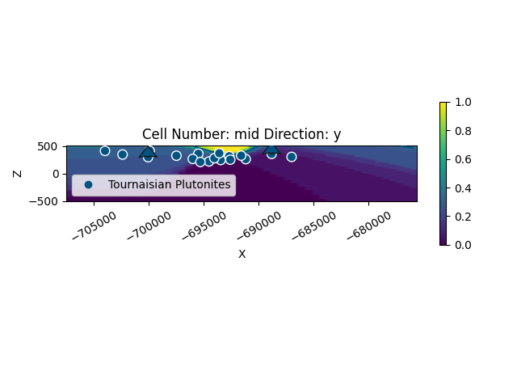</li>
<li>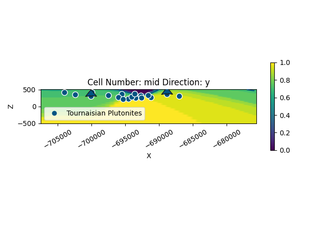</li>
<li>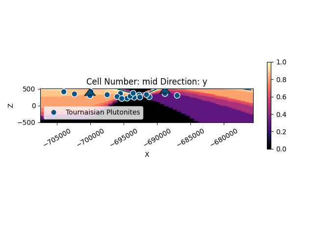</li>
<li>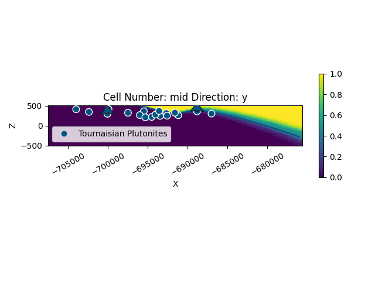</li>
<li>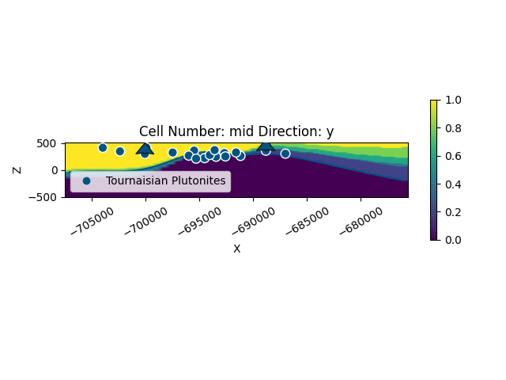</li>
<li>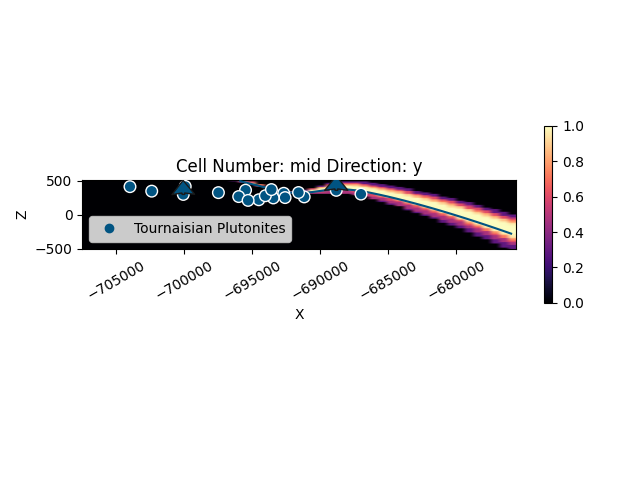</li>
</ul>
<ul class="sphx-glr-horizontal">
<li>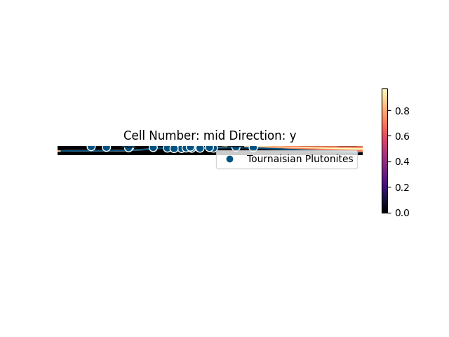</li>
<li>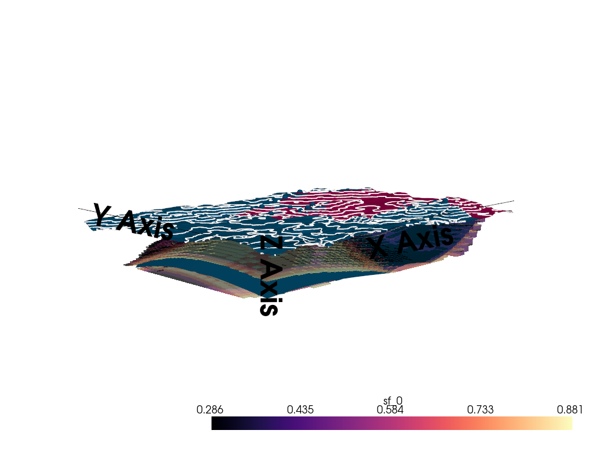</li>
</ul>
<div class="sphx-glr-script-out highlight-none notranslate"><div class="highlight"><pre><span></span>Computing prior probability fields...
Active grids: GridTypes.DENSE|NONE
Setting Backend To: AvailableBackends.PYTORCH
Using sequential processing for 1 surfaces
Setting Backend To: AvailableBackends.PYTORCH
Using sequential processing for 1 surfaces
Setting Backend To: AvailableBackends.PYTORCH
Using sequential processing for 1 surfaces
Setting Backend To: AvailableBackends.PYTORCH
Using sequential processing for 1 surfaces
Setting Backend To: AvailableBackends.PYTORCH
Using sequential processing for 1 surfaces
Setting Backend To: AvailableBackends.PYTORCH
Using sequential processing for 1 surfaces
Setting Backend To: AvailableBackends.PYTORCH
Using sequential processing for 1 surfaces
Setting Backend To: AvailableBackends.PYTORCH
Using sequential processing for 1 surfaces
Setting Backend To: AvailableBackends.PYTORCH
Using sequential processing for 1 surfaces
Setting Backend To: AvailableBackends.PYTORCH
Using sequential processing for 1 surfaces
Setting Backend To: AvailableBackends.PYTORCH
Using sequential processing for 1 surfaces
Setting Backend To: AvailableBackends.PYTORCH
Using sequential processing for 1 surfaces
Setting Backend To: AvailableBackends.PYTORCH
Using sequential processing for 1 surfaces
Setting Backend To: AvailableBackends.PYTORCH
Using sequential processing for 1 surfaces
Setting Backend To: AvailableBackends.PYTORCH
Using sequential processing for 1 surfaces
Setting Backend To: AvailableBackends.PYTORCH
Using sequential processing for 1 surfaces
Setting Backend To: AvailableBackends.PYTORCH
Using sequential processing for 1 surfaces
Setting Backend To: AvailableBackends.PYTORCH
Using sequential processing for 1 surfaces
Setting Backend To: AvailableBackends.PYTORCH
Using sequential processing for 1 surfaces
Setting Backend To: AvailableBackends.PYTORCH
Using sequential processing for 1 surfaces
Setting Backend To: AvailableBackends.PYTORCH
Using sequential processing for 1 surfaces
Active grids: GridTypes.DENSE|TOPOGRAPHY|NONE
Setting Backend To: AvailableBackends.PYTORCH
Using sequential processing for 1 surfaces
/home/leguark/PycharmProjects/gempy_viewer/gempy_viewer/modules/plot_3d/drawer_surfaces_3d.py:38: PyVistaDeprecationWarning:
../../../gempy_viewer/gempy_viewer/modules/plot_3d/drawer_surfaces_3d.py:38: Argument &#39;color&#39; must be passed as a keyword argument to function &#39;BasePlotter.add_mesh&#39;.
From version 0.50, passing this as a positional argument will result in a TypeError.
  gempy_vista.surface_actors[element.name] = gempy_vista.p.add_mesh(

Computing posterior probability fields...
Active grids: GridTypes.DENSE|NONE
Setting Backend To: AvailableBackends.PYTORCH
Using sequential processing for 1 surfaces
Setting Backend To: AvailableBackends.PYTORCH
Using sequential processing for 1 surfaces
Setting Backend To: AvailableBackends.PYTORCH
Using sequential processing for 1 surfaces
Setting Backend To: AvailableBackends.PYTORCH
Using sequential processing for 1 surfaces
Setting Backend To: AvailableBackends.PYTORCH
Using sequential processing for 1 surfaces
Setting Backend To: AvailableBackends.PYTORCH
Using sequential processing for 1 surfaces
Setting Backend To: AvailableBackends.PYTORCH
Using sequential processing for 1 surfaces
Setting Backend To: AvailableBackends.PYTORCH
Using sequential processing for 1 surfaces
Setting Backend To: AvailableBackends.PYTORCH
Using sequential processing for 1 surfaces
Setting Backend To: AvailableBackends.PYTORCH
Using sequential processing for 1 surfaces
Setting Backend To: AvailableBackends.PYTORCH
Using sequential processing for 1 surfaces
Setting Backend To: AvailableBackends.PYTORCH
Using sequential processing for 1 surfaces
Setting Backend To: AvailableBackends.PYTORCH
Using sequential processing for 1 surfaces
Setting Backend To: AvailableBackends.PYTORCH
Using sequential processing for 1 surfaces
Setting Backend To: AvailableBackends.PYTORCH
Using sequential processing for 1 surfaces
Setting Backend To: AvailableBackends.PYTORCH
Using sequential processing for 1 surfaces
Setting Backend To: AvailableBackends.PYTORCH
Using sequential processing for 1 surfaces
Setting Backend To: AvailableBackends.PYTORCH
Using sequential processing for 1 surfaces
Setting Backend To: AvailableBackends.PYTORCH
Using sequential processing for 1 surfaces
Setting Backend To: AvailableBackends.PYTORCH
Using sequential processing for 1 surfaces
Setting Backend To: AvailableBackends.PYTORCH
Using sequential processing for 1 surfaces
Active grids: GridTypes.DENSE|TOPOGRAPHY|NONE
Setting Backend To: AvailableBackends.PYTORCH
Using sequential processing for 1 surfaces
/home/leguark/PycharmProjects/gempy_viewer/gempy_viewer/modules/plot_3d/drawer_surfaces_3d.py:38: PyVistaDeprecationWarning:
../../../gempy_viewer/gempy_viewer/modules/plot_3d/drawer_surfaces_3d.py:38: Argument &#39;color&#39; must be passed as a keyword argument to function &#39;BasePlotter.add_mesh&#39;.
From version 0.50, passing this as a positional argument will result in a TypeError.
  gempy_vista.surface_actors[element.name] = gempy_vista.p.add_mesh(
</pre></div>
</div>
<p><strong>3D Entropy Visualization</strong></p>
<p>We can also visualize uncertainty in 3D by injecting the entropy field back
into the GemPy solutions object.
Note: The 3D visualization is already handled inside probability_fields_for()
by injecting the entropy field and calling gpv.plot_3d.</p>
</section>
<section id="summary">
<h2>Summary<a class="headerlink" href="#summary" title="Link to this heading">¶</a></h2>
<p><strong>Key Takeaways</strong></p>
<ol class="arabic simple">
<li><p><strong>Same Framework, Different Physics</strong>: The Bayesian workflow for magnetic
inversion is identical to gravity (see example 04), but we model
susceptibility instead of density.</p></li>
<li><p><strong>TMI is Orientation-Dependent</strong>: Magnetic anomalies depend on Earth’s field
direction (inclination, declination), making interpretation more complex
than gravity.</p></li>
<li><p><strong>Hierarchical Noise Modeling</strong>: Per-station noise inference automatically
handles outliers and varying data quality.</p></li>
<li><p><strong>Joint Interpretation</strong>: For best results, consider joint gravity-magnetic
inversion to simultaneously constrain both density and susceptibility.</p></li>
</ol>
<p>For detailed explanations of:
- Bayesian theory and MCMC
- Hierarchical modeling
- Prior predictive checks
- Posterior diagnostics</p>
<p>Please refer to <span class="xref std std-ref">sphx_glr_02_probabilistic_modeling_04_gravity_inversion.py</span></p>
<div class="highlight-Python notranslate"><div class="highlight"><pre><span></span><span class="c1"># sphinx_gallery_thumbnail_number = 24</span>
</pre></div>
</div>
<p class="sphx-glr-timing"><strong>Total running time of the script:</strong> (1 minutes 33.291 seconds)</p>
<div class="sphx-glr-footer sphx-glr-footer-example docutils container" id="sphx-glr-download-examples-probabilistic-05-magnetics-inversion-py">
<div class="sphx-glr-download sphx-glr-download-jupyter docutils container">
<p><a class="reference download internal" download="" href="../_downloads/ebbd6bb5d6876263bafba20e121a17b9/05_magnetics_inversion.ipynb"><code class="xref download docutils literal notranslate"><span class="pre">Download</span> <span class="pre">Jupyter</span> <span class="pre">notebook:</span> <span class="pre">05_magnetics_inversion.ipynb</span></code></a></p>
</div>
<div class="sphx-glr-download sphx-glr-download-python docutils container">
<p><a class="reference download internal" download="" href="../_downloads/6c74260be884d914cefbff26610e6c9f/05_magnetics_inversion.py"><code class="xref download docutils literal notranslate"><span class="pre">Download</span> <span class="pre">Python</span> <span class="pre">source</span> <span class="pre">code:</span> <span class="pre">05_magnetics_inversion.py</span></code></a></p>
</div>
<div class="sphx-glr-download sphx-glr-download-zip docutils container">
<p><a class="reference download internal" download="" href="../_downloads/9ddf71a20029d5498b2feee2f0b698f9/05_magnetics_inversion.zip"><code class="xref download docutils literal notranslate"><span class="pre">Download</span> <span class="pre">zipped:</span> <span class="pre">05_magnetics_inversion.zip</span></code></a></p>
</div>
</div>
<p class="sphx-glr-signature"><a class="reference external" href="https://sphinx-gallery.github.io">Gallery generated by Sphinx-Gallery</a></p>
</section>
</section>


          </div>
          
        </div>
      </div>
      <div class="sphinxsidebar" role="navigation" aria-label="Main">
        <div class="sphinxsidebarwrapper">
            <p class="logo"><a href="../index.html">
              
            </a></p>
<h1 class="logo"><a href="../index.html">Mineye-Terranigma</a></h1>


<p class="blurb">Implicit Geological Modeling & Bayesian Geophysical Inversion</p>


<search id="searchbox" style="display: none" role="search">
    <div class="searchformwrapper">
    <form class="search" action="../search.html" method="get">
      <input type="text" name="q" aria-labelledby="searchlabel" autocomplete="off" autocorrect="off" autocapitalize="off" spellcheck="false" placeholder="Search"/>
      <input type="submit" value="Go" />
    </form>
    </div>
</search>
<script>document.getElementById('searchbox').style.display = "block"</script><h3>Navigation</h3>
<ul>
<li class="toctree-l1"><a class="reference internal" href="../installation.html">Installation</a></li>
</ul>
<ul>
<li class="toctree-l1"><a class="reference internal" href="../examples_basic/index.html">Basic Examples</a></li>
</ul>
<ul>
<li class="toctree-l1"><a class="reference internal" href="../examples_probabilistic/index.html">Probabilistic Modeling Examples</a></li>
</ul>
<ul>
<li class="toctree-l1"><a class="reference internal" href="../examples_segmentation/index.html">Hyperspectral Segmentation</a></li>
</ul>
<ul>
<li class="toctree-l1"><a class="reference internal" href="../api_reference.html">API Reference</a></li>
</ul>

<div class="relations">
<h3>Related Topics</h3>
<ul>
  <li><a href="../index.html">Documentation overview</a><ul>
  </ul></li>
</ul>
</div>


        </div>
      </div>
      <div class="clearer"></div>
    </div>
    <div class="footer">
      &#169;2024-2026, Terranigma Solutions GmbH.
      
      |
      Powered by <a href="https://www.sphinx-doc.org/">Sphinx 9.1.0</a>
      &amp; <a href="https://alabaster.readthedocs.io">Alabaster 1.0.0</a>
      
      |
      <a href="../_sources/examples_probabilistic_v1/05_magnetics_inversion.rst.txt"
          rel="nofollow">Page source</a>
    </div>

    

    
  </body>
</html>